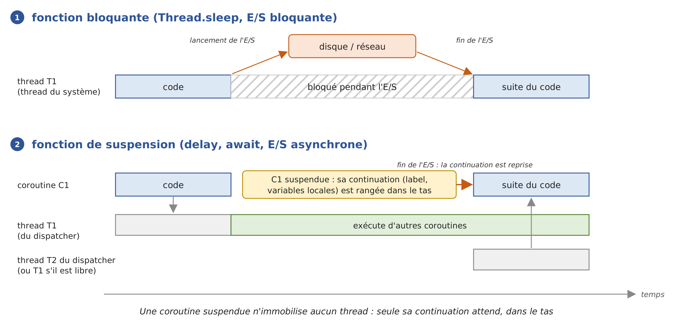
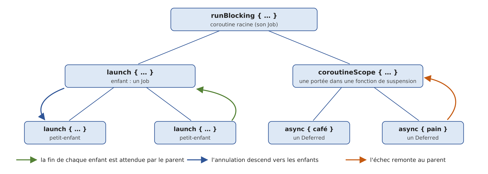

9. La programmation asynchrone avec les coroutines
Le chapitre précédent a présenté les threads : on peut faire exécuter plusieurs morceaux de code « en même temps », les synchroniser, et confier des tâches à un pool de threads par l'intermédiaire d'un exécuteur ([ExecutorService]). Ce chapitre traite d'une question voisine mais différente : comment écrire un programme qui attend beaucoup (le disque, le réseau, une base de données) sans immobiliser de threads pendant ces attentes.
C'est le chapitre où Kotlin s'éloigne le plus de Java. Le cours Java présentait deux réponses : la classe [CompletableFuture<T>], dont on compose la suite par des méthodes de rappel, et les threads virtuels de Java 21, qui permettent d'écrire du code bloquant sans immobiliser de thread du système. Ces deux outils restent disponibles en Kotlin (ce sont des classes du JDK), et nous les retrouverons. Mais Kotlin apporte sa propre réponse, les coroutines :
- le langage ne comprend qu'un seul mot clé, [suspend], qui marque une fonction de suspension : une fonction qui peut s'interrompre au milieu de son exécution, libérer le thread qui l'exécute, puis reprendre plus tard, au même endroit, avec les mêmes valeurs de variables locales ;
- le compilateur transforme chaque fonction de suspension en une « machine à états » capable de s'interrompre et de reprendre ; nous verrons comment ;
- tout le reste est fourni par une bibliothèque, kotlinx.coroutines : lancer des coroutines ([launch], [async]), les attendre ([join], [await]), attendre sans bloquer ([delay]), choisir les threads qui les exécutent (les dispatchers), les annuler, limiter leur durée, faire circuler des valeurs entre elles ([Flow], [Channel]).
Le code obtenu se lit de haut en bas comme du code séquentiel : c'est l'équivalent des mots clés [async] / [await] du C#, que connaissent les lecteurs du cours d'origine, avec en plus une notion que ni C# ni Java (sinon à l'état d'aperçu) ne proposent : la concurrence structurée, qui organise les coroutines en un arbre dont chaque nœud attend ses enfants, les annule et reçoit leurs erreurs.
Les coroutines sont aujourd'hui partout dans l'écosystème Kotlin : sur Android, dans les cadriciels web (Ktor, Spring, qui accepte des fonctions [suspend] dans ses contrôleurs), dans les clients HTTP et les pilotes de bases de données. Les chapitres suivants les retrouveront pour accéder aux bases de données et au réseau.
La bibliothèque kotlinx.coroutines ne fait pas partie de la bibliothèque standard : le projet Gradle du chapitre, dans le dossier [09-async], la déclare dans son fichier [build.gradle.kts] :
- ligne 17 : la dépendance vers la bibliothèque kotlinx.coroutines, version 1.11.0. Le paquetage principal est [kotlinx.coroutines] ;
- lignes 32-34 : comme dans les chapitres précédents, le programme exécuté est désigné par la propriété [main] : [gradlew -q run -Pmain=async01.Async01Kt] ;
- lignes 42-45 : les programmes lancés par Gradle écrivent leurs sorties en UTF-8, pour que les caractères accentués s'affichent correctement sous Windows (chapitre 2).
Les programmes du chapitre sont rangés, comme d'habitude, dans des paquetages à leur nom : [src/main/kotlin/async01/Async01.kt], [src/main/kotlin/async02/Async02.kt]… Beaucoup d'entre eux mesurent des durées avec [System.nanoTime()] : les millisecondes affichées varient d'une exécution à l'autre et d'une machine à l'autre (les exemples ont été exécutés sur une machine à 2 processeurs). Ce sont les ordres de grandeur qui comptent : 1 seconde ou 10 secondes, 300 ms ou 0 ms. La première utilisation des coroutines dans un programme charge les classes de la bibliothèque, ce qui ajoute souvent quelques dizaines de millisecondes aux premières mesures.
9.1. Pourquoi l'asynchronisme
9.1.1. Les opérations qui attendent
Un programme fait deux sortes de travail :
- du calcul, qui occupe le processeur : trier une liste, calculer un impôt, analyser un texte ;
- des entrées / sorties (E/S), qui consistent pour l'essentiel à attendre un périphérique : lire un fichier sur le disque, envoyer une requête à un serveur web et attendre sa réponse, exécuter une requête SQL sur un serveur de bases de données.
Les ordres de grandeur sont très différents. Un processeur exécute quelques milliards d'instructions par seconde. Une lecture sur un disque SSD prend de l'ordre d'un dixième de milliseconde, un aller-retour sur un réseau local une fraction de milliseconde, un aller-retour vers un serveur situé à l'autre bout du pays quelques dizaines de millisecondes, une requête SQL un peu complexe parfois plusieurs secondes. Pendant ces attentes, le processeur aurait pu exécuter des millions d'instructions.
Lorsqu'un programme lit une ligne sur une connexion réseau avec une fonction bloquante, le thread qui exécute cette lecture est bloqué : il ne fait rien, mais il existe. Un thread « classique » de la JVM, que l'on appelle aujourd'hui thread de plate-forme (« platform thread »), est un thread du système d'exploitation : il occupe de la mémoire (sa pile, de l'ordre du mégaoctet), il est connu du système, et surtout il n'est plus disponible pour faire autre chose. Ce n'est pas gênant dans un petit programme console qui fait une chose à la fois. Cela l'est beaucoup plus dans deux situations :
- dans un serveur : chaque client servi par un thread bloqué immobilise ce thread. Si le pool de threads du serveur a N threads et que les N threads font une opération bloquante, il n'y a plus de thread disponible pour un nouveau client. Un serveur moderne sert des milliers de requêtes simultanées : c'est possible parce que ses attentes n'immobilisent pas de thread du système ;
- dans une interface graphique : un seul thread, le thread de l'interface (le thread principal d'une application Android, l'« Event Dispatch Thread » de Swing, le « JavaFX Application Thread »), traite les clics et redessine les fenêtres. S'il est bloqué par un téléchargement, la fenêtre se fige ; sur Android, le système finit même par proposer de fermer l'application.
L'asynchronisme consiste à lancer l'opération d'E/S, à libérer le thread du système pendant qu'elle se déroule (le matériel et le système d'exploitation n'ont pas besoin de lui pour transférer les données), puis à reprendre le travail lorsque l'opération est terminée, éventuellement sur un autre thread. Les threads virtuels de Java obtiennent ce résultat au niveau de la JVM : un thread virtuel bloqué est décroché de son thread porteur, qui exécute pendant ce temps d'autres threads virtuels. Les coroutines de Kotlin l'obtiennent au niveau du code compilé : une coroutine qui attend est suspendue, c'est-à-dire que son état (l'endroit où elle s'est arrêtée et ses variables locales) est rangé dans un objet du tas, appelé continuation, et le thread qui l'exécutait est rendu à son pool :

- en [1], le thread du système T1 exécute une fonction bloquante ; il reste bloqué jusqu'à la fin de l'E/S ;
- en [2], la coroutine C1 appelle une fonction de suspension qui lance l'E/S ; la coroutine est suspendue : sa continuation est conservée dans le tas, et le thread T1 qui l'exécutait peut aussitôt exécuter d'autres coroutines. Lorsque l'E/S se termine, la continuation est reprise (« resumed ») par un thread libre, T2 (qui peut d'ailleurs être T1), et C1 continue son exécution juste après l'appel de la fonction de suspension, comme si de rien n'était.
Le programme [Async01.kt] mesure la différence sur 100 opérations qui attendent chacune une seconde (l'attente simule une E/S). Il utilise des instructions que nous expliquerons dans la suite du chapitre ([runBlocking], [launch], [delay]) : on s'intéresse ici surtout aux résultats.
Résultats :
Commentaires :
- lignes 19-25 : la solution la plus simple, un thread de plate-forme par opération. La fonction [thread { … }] de [kotlin.concurrent] (chapitre 8) crée et démarre un thread ; [List(NB_OPERATIONS) { … }] construit la liste des 100 threads. Chaque thread exécute [Thread.sleep(1000)] : il est bloqué pendant une seconde. Les 100 attentes se déroulent en même temps et l'ensemble dure bien une seconde (ligne 4 des résultats), mais au prix de 100 threads du système supplémentaires : la JVM en compte 106 (ligne 3). Avec 10 000 opérations, il faudrait 10 000 threads du système ;
- lignes 27-34 : les opérations sont confiées à un pool de 10 threads ([Executors.newFixedThreadPool(10)]), une taille raisonnable pour des calculs. Mais ici ses threads ne calculent pas : ils dorment. Les opérations attendent un thread libre, par vagues de 10, et l'ensemble dure… dix secondes (ligne 6). C'est ce qu'on appelle la famine du pool de threads (« thread pool starvation »), le défaut le plus fréquent des serveurs qui mélangent pool de threads et E/S bloquantes. Un [ExecutorService] est [AutoCloseable] (Java 19) : la fonction [use] appelle sa méthode [close()] à la fin du bloc, ce qui refuse les nouvelles tâches et attend la fin de celles qui ont été soumises ([use] joue le rôle du [try] avec ressource de Java) ;
- lignes 36-43 : un thread virtuel par opération. Le code des tâches est le même qu'à l'étape 1 : un [Thread.sleep(1000)] bloquant. Mais un thread virtuel bloqué n'immobilise pas de thread du système. Les 100 attentes durent ensemble une seconde (ligne 8), et la JVM ne compte que 10 threads du système (ligne 7) : ses threads de service et les deux threads porteurs, un par processeur. C'est la solution du cours Java ;
- lignes 45-53 : une coroutine par opération. [runBlocking { … }] exécute un bloc de code comme une coroutine, sur le thread qui l'appelle (ici le thread [main]), et ne rend la main qu'à la fin de cette coroutine et de toutes celles qu'elle a lancées. Dans le bloc, [launch { delay(1000) }] lance une nouvelle coroutine qui attend une seconde : [delay] est une fonction de suspension qui suspend la coroutine, sans bloquer le thread. Les 100 coroutines sont exécutées par le seul thread [main] : pendant leurs attentes, il ne leur doit rien, et il exécute les autres. La JVM compte toujours 10 threads (ligne 9) : pas un de plus qu'à l'étape précédente. L'ensemble dure un peu plus d'une seconde (ligne 10), le supplément venant du chargement des classes de la bibliothèque, qui a lieu lors de cette première utilisation ;
- ligne 50 : pour mesurer le nombre de threads à mi-parcours, la coroutine principale attend elle aussi avec [delay]. Avec [Thread.sleep], elle bloquerait le thread [main], qui est le seul à exécuter les 100 coroutines : elles ne pourraient pas commencer avant la fin de cette attente. Nous reviendrons sur cette différence essentielle entre [delay] et [Thread.sleep] ;
- lignes 55-62 : cent mille coroutines, toujours exécutées par le seul thread [main], sans aucun thread supplémentaire (ligne 11). Une coroutine suspendue n'est qu'un petit ensemble d'objets du tas, de quelques dizaines d'octets chacun : on peut en avoir des centaines de milliers. La création des cent mille coroutines et de leurs délais prend elle-même un peu de temps (quelques centaines de millisecondes sur la machine des exemples, d'où le temps de la ligne 12) ; cent mille threads de plate-forme, eux, seraient tout simplement impossibles à créer sur la plupart des machines ;
- ligne 75 : [ManagementFactory.getThreadMXBean().threadCount] donne le nombre de threads de plate-forme vivants de la JVM. En Kotlin, la méthode Java [getThreadCount()] est vue comme une propriété, [threadCount] ;
- les attentes de la fonction [thread] et des exécuteurs utilisent [Thread.sleep] directement : Kotlin n'a pas d'exceptions contrôlées (chapitre 3), il n'est donc pas nécessaire d'intercepter l'[InterruptedException] que [Thread.sleep] peut lancer, comme le faisait la méthode [attendre] du programme Java.
Retenons la leçon : pour attendre, il ne faut pas bloquer de thread du système. L'asynchronisme ne rend pas une E/S plus rapide ; il permet d'en mener beaucoup de front avec peu de threads, et de garder disponibles les threads dont l'application a besoin. Kotlin offre deux chemins : écrire du code bloquant ordinaire exécuté par des threads virtuels (étape 3, comme en Java), ou écrire des fonctions de suspension exécutées par des coroutines (étapes 4 et 5). C'est ce second chemin que ce chapitre présente.
9.1.2. Plusieurs modèles successifs
Les plates-formes ont proposé plusieurs façons d'écrire du code qui attend sans bloquer. On rencontre encore les plus anciennes dans du code existant, et Kotlin, qui utilise directement les bibliothèques Java, les côtoie : il est utile de les reconnaître.
Modèle | Apparition | Principe |
threads et exécuteurs | Java 1.0 (1996), Java 5 (2004) | un thread par opération, ou un pool de threads ([ExecutorService]). [submit] rend un [Future<T>], qui représente le résultat à venir, mais la seule façon d'obtenir ce résultat est d'attendre, en bloquant, avec [get()]. |
méthodes de rappel | Java 7 (NIO.2, 2011), JavaScript | on lance une opération en lui passant un objet ou une fonction de rappel ([CompletionHandler] de NIO.2), appelé à la fin de l'opération par un thread d'un pool. |
futures composables | Java 8 ([CompletableFuture], 2014), promesses de JavaScript | un objet qui représente l'opération en cours et dont on compose la suite par des méthodes ([thenApply], [thenCompose], [exceptionally]…) ; les bibliothèques réactives (Project Reactor, RxJava) reposent sur les mêmes idées. |
[async] / [await] | C# 5 (2012), puis JavaScript, Python, Rust… | des méthodes [async] qui rendent une tâche ([Task<T>] en C#) ; [await] suspend la méthode jusqu'à la fin de la tâche sans bloquer le thread. Le compilateur transforme la méthode en machine à états. |
coroutines de Kotlin | Kotlin 1.3 (2018) | des fonctions [suspend] transformées par le compilateur en machines à états, et la bibliothèque kotlinx.coroutines, qui apporte la concurrence structurée. Les appels de fonctions de suspension ne portent aucun mot clé : le code a la forme du code séquentiel. |
threads virtuels | Java 21 (2023) | du code bloquant ordinaire, exécuté par des threads virtuels : la JVM libère le thread du système pendant les attentes. |
Les méthodes de rappel ont un défaut : le code est découpé en morceaux. Ce qui s'écrit naturellement « se connecter, puis lire, puis afficher » devient une fonction qui lance la connexion, une fonction de rappel qui lance la lecture, une autre fonction de rappel qui affiche ; les variables doivent être partagées entre ces fonctions, les exceptions sont récupérées à des endroits différents, et une simple boucle (« lire tant qu'il y a des données ») devient une fonction de rappel qui se relance elle-même. Les futures composables rendent ce découpage plus lisible en enchaînant les étapes ; les coroutines le font disparaître : le code asynchrone a la forme du code synchrone. La différence avec les threads virtuels est que c'est le compilateur, et non la JVM, qui découpe le code aux points d'attente.
Le programme [Async02.kt] écrit le même client TCP selon les deux modèles extrêmes : avec les méthodes de rappel de NIO.2, puis avec une coroutine. Il contient aussi un petit serveur, exécuté par un thread, qui répond à deux clients (la programmation réseau sera étudiée en détail au chapitre 12 ; il suffit ici de savoir qu'un client se connecte au serveur et lit le message que celui-ci lui envoie).
1 2 3 4 5 6 7 8 9 10 11 12 13 14 15 16 17 18 19 20 21 22 23 24 25 26 27 28 29 30 31 32 33 34 35 36 37 38 39 40 41 42 43 44 45 46 47 48 49 50 51 52 53 54 55 56 57 58 59 60 61 62 63 64 65 66 67 68 69 70 71 72 73 74 75 76 77 78 79 80 81 82 83 84 85 86 87 88 89 90 91 92 93 94 95 96 97 98 99 100 101 102 103 104 105 106 107 108 109 110 111 112 113 | |
Résultats :
Commentaires :
- lignes 23-36 : le serveur. Il écoute sur le port 27500 de la machine locale ([InetAddress.getLoopbackAddress()], c'est-à-dire 127.0.0.1), accepte deux connexions l'une après l'autre et envoie à chaque client, après une demi-seconde, un message de bienvenue. Il est exécuté par un thread de plate-forme nommé [serveur], créé par la fonction [thread] avec l'argument nommé [name]. Les fonctions [use] ferment le [ServerSocket] et chaque [Socket] de service à la fin de leur bloc ;
- lignes 38-71 : le client écrit avec des méthodes de rappel :
- ligne 40 : un [AsynchronousSocketChannel] est un canal TCP dont les opérations sont asynchrones ;
- ligne 43 : [connect] lance la connexion et rend la main immédiatement (ligne 3 des résultats). Ses deux derniers paramètres sont un objet quelconque que la méthode de rappel recevra (ici [Unit], car nous n'en avons pas besoin) et l'objet de rappel, qui implémente l'interface [CompletionHandler<V, A>], où [V] est le type du résultat de l'opération ([Void?] pour une connexion, qui ne rend rien) et [A] celui de l'objet transmis. Kotlin permet de créer cet objet sur place avec une expression objet ([object : CompletionHandler<Void?, Unit> { … }]), l'équivalent des classes anonymes de Java. Sa méthode [completed] est appelée si l'opération réussit, sa méthode [failed] si elle échoue ;
- lignes 44-48 : une fois connecté, on lance la lecture avec [read], en indiquant un second objet de rappel, imbriqué dans le premier ;
- lignes 49-54 : l'objet de rappel de la lecture reçoit le nombre d'octets lus, affiche le message, ferme le canal et débloque le thread principal ;
- ligne 71 : le thread principal n'a plus rien à faire. Pour que le programme ne se termine pas avant la fin de l'échange, il attend un signal que donnera la dernière méthode de rappel : un [CountDownLatch] initialisé à 1, dont la méthode [await] bloque le thread qui l'appelle jusqu'à ce qu'un autre thread appelle sa méthode [countDown] ;
- les résultats montrent que les méthodes de rappel sont exécutées par d'autres threads que le thread principal (des threads du pool de la JVM consacré aux canaux asynchrones, nommés [InnocuousThread-N]). L'imbrication des deux objets de rappel donne déjà un code difficile à suivre ; avec trois ou quatre opérations successives, on obtient ce qu'on appelle « l'enfer des rappels » (« callback hell ») ;
- lignes 73-88 : le même client écrit avec une coroutine lancée par [runBlocking]. Le code se lit de haut en bas comme du code synchrone : on se connecte, on lit, on affiche. Les variables sont des variables locales ordinaires, les erreurs sont traitées par un seul [try / catch], il n'y a ni objet de rappel imbriqué ni signal à gérer. Pourtant, aucun thread n'attend la connexion ni la réponse du serveur : [connecter] et [lire] sont des fonctions de suspension, qui suspendent la coroutine pendant l'opération ;
- lignes 92-99 : la fonction [connecter] transforme l'opération à rappel en fonction de suspension. C'est une fonction d'extension (chapitre 4) de [AsynchronousSocketChannel], marquée [suspend]. La fonction [suspendCancellableCoroutine] de kotlinx.coroutines suspend la coroutine qui l'appelle et passe au bloc qu'elle reçoit la continuation de cette coroutine, c'est-à-dire l'objet qui permet de la reprendre. Le bloc lance l'opération avec un objet de rappel qui, à la fin de l'opération, reprend la coroutine : avec une valeur ([resume]), ou en lui faisant lancer une exception ([resumeWithException]). La méthode de rappel ne fait plus rien d'autre : toute la logique du client est restée dans la coroutine ;
- lignes 104-107 : la lecture, transformée de même en une fonction de suspension qui rend le nombre d'octets lus ;
- la fin des résultats montre que la coroutine affiche sur le thread [main], avant comme après les deux suspensions : la méthode de rappel, exécutée par un [InnocuousThread], reprend la continuation, mais celle-ci est renvoyée vers le thread de [runBlocking]. Nous verrons au paragraphe sur les dispatchers comment est choisi le thread qui exécute la suite d'une coroutine.
On retiendra le mécanisme, car c'est celui de toutes les coroutines : une coroutine suspendue est une continuation en attente, et une continuation n'est rien d'autre qu'une méthode de rappel, mais une méthode de rappel que le compilateur fabrique lui-même à partir de la suite du code. Il est rare d'avoir à écrire soi-même des fonctions comme [connecter] : la bibliothèque kotlinx.coroutines et les autres bibliothèques Kotlin fournissent des fonctions de suspension pour la plupart des opérations. Mais si l'on doit utiliser une API qui ne propose que des méthodes de rappel, [suspendCancellableCoroutine] permet de la transformer en quelques lignes.
9.2. Les opérations à venir : CompletableFuture et Deferred
9.2.1. Les CompletableFuture vus depuis Kotlin
Un [Future<T>] (interface du paquetage [java.util.concurrent], Java 5) est un objet qui représente le résultat, de type [T], d'une opération en cours ou terminée. Le chapitre précédent l'a rencontré : c'est ce que rend la méthode [submit] d'un exécuteur. On peut l'interroger (est-elle terminée ? a-t-elle réussi ?), l'annuler ([cancel]) et attendre son résultat ([get]), mais rien d'autre : la seule façon d'exploiter le résultat est de bloquer un thread jusqu'à ce qu'il soit là.
La classe [CompletableFuture<T>] (Java 8) implémente [Future<T>] et ajoute deux possibilités essentielles :
- on peut la terminer soi-même, avec un résultat ([complete]) ou une exception ([completeExceptionally]) ;
- on peut lui attacher la suite du traitement, une fonction qui sera exécutée lorsque le résultat sera disponible ([thenApply], [thenAccept], [thenCompose]…), ce qui produit un nouveau [CompletableFuture]. On construit ainsi des chaînes d'opérations sans qu'aucun thread n'attende.
Un [CompletableFuture] n'est pas un thread. Il peut représenter un traitement exécuté par un thread d'un exécuteur (c'est le cas de ceux que crée [supplyAsync]), mais beaucoup ne sont exécutés par aucun thread : celui que rend la méthode [sendAsync] du client HTTP du JDK est terminé lorsque la réponse du serveur est arrivée. C'est une promesse de résultat.
Le programmeur Kotlin rencontre des [CompletableFuture] chaque fois qu'il utilise une bibliothèque Java asynchrone : le client HTTP du JDK, certains pilotes de bases de données, des clients de services en nuage… Il doit savoir les manipuler, et surtout les relier aux coroutines. Le programme [Async03.kt] reprend le programme Java qui présentait les principales façons de créer, d'interroger et d'attendre un [CompletableFuture], écrit en Kotlin :
Résultats :
Commentaires :
- lignes 10-17 : [CompletableFuture.supplyAsync(fournisseur)] confie une fonction sans paramètre (un [Supplier<T>] Java) à un exécuteur et rend aussitôt un [CompletableFuture<T>] qui représente son exécution. Grâce à la conversion SAM (chapitre 7), on lui passe une lambda Kotlin, placée hors des parenthèses ; sa dernière expression, [somme], est le résultat. Sans exécuteur explicite, c'est le pool commun de la JVM, [ForkJoinPool.commonPool()], qui exécute la fonction ;
- ligne 19 : la méthode [state()] (Java 19) donne l'état de l'opération : [RUNNING] (en cours), [SUCCESS] (terminée avec succès), [FAILED] (terminée sur une exception) ou [CANCELLED] (annulée). Ce sont les constantes de l'énumération [Future.State] ;
- ligne 21 : [join()] attend la fin de l'opération et rend son résultat. C'est une attente bloquante : le thread courant est immobilisé (le thread principal ici, ce qui ne gêne pas un petit programme console) ;
- lignes 24-28 : un [CompletableFuture] créé « en cours » par son constructeur et terminé par une minuterie au bout de 300 ms ([completeOnTimeout], Java 9) : c'est l'équivalent asynchrone de [Thread.sleep(300)]. En Java, une opération sans résultat a le type [CompletableFuture<Void>] ; en Kotlin, on peut écrire [CompletableFuture<Unit>], dont la seule valeur est [Unit] ;
- lignes 30-34 : [completedFuture(42)] rend un [CompletableFuture] déjà terminé dont le résultat est 42, [failedFuture(exception)] un [CompletableFuture] déjà en échec ; le type du résultat de ce dernier ne peut pas être déduit de son argument, on le précise donc entre chevrons : [failedFuture<Int>(...)]. [resultNow()] et [exceptionNow()] (Java 19) rendent le résultat ou l'exception d'une opération terminée, sans attendre ;
- lignes 36-41 : une opération dont la fonction lance une exception se termine dans l'état [FAILED]. L'exception est conservée dans le [CompletableFuture], et [join()] lance une [CompletionException] dont la cause ([cause], la méthode [getCause()] vue comme une propriété) est l'exception d'origine, ici une [NumberFormatException] lancée par ["abc".toInt()] ;
- lignes 44-48 : [get()], la méthode héritée de l'interface [Future], attend elle aussi en bloquant, mais enveloppe l'exception dans une [ExecutionException]. En Java, c'est une exception contrôlée, que la méthode [main] devait intercepter ou déclarer, ainsi que l'[InterruptedException] que [get()] peut lancer. Kotlin n'a pas d'exceptions contrôlées : on intercepte celles qui nous intéressent, et rien d'autre ;
- lignes 51-56 : une continuation. [f2.thenApply { 2 * 21 }] rend un nouveau [CompletableFuture] qui sera terminé avec le résultat de la fonction, lorsque [f2] sera terminé : on obtient un [CompletableFuture<Int>]. [thenAccept] attache une fonction qui consomme le résultat sans en produire et rend un [CompletableFuture<Void>] (c'est une méthode Java : son type de résultat est [Void], que Kotlin ne transforme pas en [Unit]) ;
- lignes 58-60 : les méthodes booléennes [isDone()] (terminée, quelle que soit la façon), [isCompletedExceptionally()] (terminée sur une exception ou annulée) et [isCancelled()] (annulée) : Kotlin les présente comme des propriétés, [isDone], [isCompletedExceptionally], [isCancelled].
Le cours Java consacrait ensuite plusieurs pages à la composition des [CompletableFuture] : [thenCompose], [thenCombine], [allOf], [anyOf], [exceptionally], [handle], [orTimeout]… En Kotlin, on n'a presque jamais besoin de ces méthodes : il suffit d'attendre le [CompletableFuture] dans une coroutine, avec la fonction de suspension [await()], puis d'écrire la suite comme du code ordinaire. Le tableau suivant met en regard les méthodes de [CompletableFuture] et ce qui les remplace dans le monde des coroutines (toutes ces fonctions sont présentées dans ce chapitre) :
[CompletableFuture] | coroutines |
[supplyAsync(f)], [runAsync(r)] | [async { … }] (rend un [Deferred<T>]), [launch { … }] (rend un [Job]) |
[completedFuture(v)], [complete(v)] | une simple valeur ; [CompletableDeferred] pour terminer soi-même une opération |
[thenApply(f)], [thenAccept(c)], [thenRun(r)] | [val v = operation()] puis la suite du code |
[thenCompose(f)] | deux appels successifs de fonctions de suspension |
[thenCombine(autre, f)], [allOf(...)] | [async] puis [await], [awaitAll] |
[anyOf(...)] | [select] |
[exceptionally(f)], [handle(f)], [whenComplete(c)] | [try / catch / finally] |
[orTimeout(...)], [completeOnTimeout(...)] | [withTimeout], [withTimeoutOrNull] |
[cancel] | [cancel], qui arrête vraiment l'opération (annulation coopérative) |
[join()], [get()] | [await()], [join()] : attentes qui suspendent la coroutine au lieu de bloquer le thread |
9.2.2. Les Deferred
L'équivalent d'un [CompletableFuture<T>] dans le monde des coroutines est l'interface [Deferred<T>] (« différé ») de kotlinx.coroutines : le résultat à venir d'une coroutine. On l'obtient en lançant une coroutine avec la fonction [async], et on attend son résultat avec la fonction de suspension [await()]. Un [Deferred<T>] est un cas particulier de [Job], l'interface qui représente une coroutine en cours ou terminée, sans résultat ; on obtient un [Job] en lançant une coroutine avec la fonction [launch], et on attend sa fin avec la fonction de suspension [join()].
Le programme [Async04.kt] présente les [Deferred], les [Job], et le passage des uns aux [CompletableFuture] et inversement :
Résultats :
Commentaires :
- ligne 17 : la fonction [main] est une expression [runBlocking { … }]. Le bloc est exécuté comme une coroutine par le thread [main], et [runBlocking] ne rend la main qu'à la fin de cette coroutine. C'est dans ce bloc qu'on peut appeler des fonctions de suspension ([await], [delay]…) et lancer d'autres coroutines ([async], [launch]) : le bloc reçoit implicitement un [CoroutineScope] (une portée de coroutines), dont [async] et [launch] sont des fonctions d'extension. Nous y reviendrons au paragraphe sur la concurrence structurée ;
- lignes 18-25 : [async] lance une nouvelle coroutine qui exécute le bloc, et rend aussitôt un [Deferred<Long>] qui représente son résultat (la dernière expression du bloc). Le paramètre [Dispatchers.Default] fait exécuter la coroutine par un pool de threads destiné aux calculs : sans lui, elle serait exécutée par le thread de [runBlocking], et ne commencerait qu'à la première suspension de la coroutine principale ;
- ligne 27 : l'état d'une coroutine est donné par trois propriétés de [Job] : [isActive] (en cours), [isCompleted] (terminée, quelle que soit la façon) et [isCancelled] (annulée ou en échec, comme on le voit plus loin). La fonction [etat] (lignes 74-75) les affiche ;
- ligne 29 : [await()] attend la fin de la coroutine et rend son résultat. À la différence de [join()] sur un [CompletableFuture], cette attente ne bloque pas le thread : c'est une fonction de suspension, qui suspend la coroutine principale ; le thread [main] est pendant ce temps disponible pour d'autres coroutines ;
- lignes 32-38 : une coroutine qui attend 300 ms avec [delay] puis rend une chaîne : aucun thread n'est occupé pendant l'attente ;
- lignes 40-46 : [launch] lance une coroutine qui ne rend pas de résultat et rend un [Job]. [join()] suspend la coroutine principale jusqu'à la fin de cette coroutine. [launch] / [Job] sont aux coroutines ce que [runAsync] / [CompletableFuture<Void>] sont au monde des [CompletableFuture] ;
- lignes 48-55 : une coroutine qui échoue. [await()] relance l'exception d'origine, une [NumberFormatException], sans l'envelopper dans une autre exception : on l'intercepte comme si l'appel avait été fait directement. L'état affiché montre qu'un [Job] en échec a [isCancelled=true] : pour kotlinx.coroutines, un échec est une forme d'annulation. Le bloc [supervisorScope] est nécessaire ici pour une raison que nous verrons au paragraphe sur les exceptions : sans lui, l'échec d'une coroutine se propage à la coroutine qui l'a lancée, et aurait arrêté tout le programme ;
- lignes 59-61 : la fonction d'extension [CompletableFuture<T>.await()], du paquetage [kotlinx.coroutines.future], attend un [CompletableFuture] en suspendant la coroutine, sans bloquer de thread. C'est le pont entre les bibliothèques Java asynchrones et les coroutines : un appel [client.sendAsync(requete, gestionnaire).await()] attend la réponse d'un serveur web, comme nous le verrons dans la suite du chapitre. Si le [CompletableFuture] échoue, [await()] lance l'exception d'origine, débarrassée de son enveloppe [CompletionException] ;
- lignes 63-65 : dans l'autre sens, [asCompletableFuture()] présente un [Deferred] comme un [CompletableFuture], par exemple pour le passer à du code Java qui ne connaît pas les coroutines ;
- lignes 66-71 : la fonction [future { … }] lance une coroutine et rend directement un [CompletableFuture] : c'est la façon d'écrire en Kotlin, avec des coroutines, une méthode asynchrone destinée à du code Java. Ligne 71, on compose ce [CompletableFuture] avec [thenApply], puis on attend le résultat avec [await()].
9.3. Les fonctions de suspension
9.3.1. suspend, launch, async et await
En Kotlin, une opération asynchrone s'écrit comme une fonction de suspension : une fonction ordinaire, déclarée avec le modificateur [suspend], qui rend directement son résultat (et non un [CompletableFuture] ou un [Deferred] qui le représenterait) :
- [suspend fun preparerCafe()] pour une opération qui ne rend pas de résultat ;
- [suspend fun compterSucres(nombre: Int): Int] pour une opération qui rend un entier.
Une fonction de suspension peut appeler d'autres fonctions de suspension, comme [delay], [await], [join], et c'est pendant ces appels qu'elle peut être suspendue. Elle ne peut être appelée que par une autre fonction de suspension, ou depuis une coroutine (le bloc d'un [runBlocking], d'un [launch], d'un [async]) ; le compilateur le vérifie. C'est la seule contrainte : à l'intérieur, on écrit du code ordinaire, avec des boucles, des [if], des [try / catch], des variables locales.
L'appel d'une fonction de suspension ne porte aucun mot clé : là où C# écrit [await PreparerCafeAsync()], Kotlin écrit [preparerCafe()]. Et cet appel est séquentiel : la ligne suivante n'est exécutée que lorsque la fonction appelée est terminée. Pour mener plusieurs opérations de front, on le dit explicitement, en lançant de nouvelles coroutines avec [launch] ou [async]. C'est un choix délibéré des concepteurs de Kotlin : le code séquentiel est le cas courant, il doit être le plus simple à écrire ; la concurrence doit se voir.
Le cours Java préparait un café et comptait des sucres, d'abord avec des [CompletableFuture] enchaînés par [thenRun] et [thenCompose], puis avec du code bloquant exécuté par des threads virtuels. Le programme [Async05.kt] prépare le même café avec des fonctions de suspension :
Résultats :
Commentaires :
- lignes 34-41 : une opération sans résultat, écrite comme une fonction ordinaire : un affichage, une attente d'une seconde, un affichage, une attente d'une demi-seconde, un affichage. [delay] est la fonction de suspension de kotlinx.coroutines qui attend le délai indiqué (en millisecondes, ou sous la forme d'une durée [kotlin.time.Duration] : [delay(1.seconds)]) en suspendant la coroutine. C'est l'équivalent de la méthode [delai] du programme Java, qui rendait un [CompletableFuture] terminé par une minuterie ; mais ici, la suite de la fonction n'a pas à être écrite dans une continuation : elle suit simplement l'appel ;
- lignes 44-50 : une opération qui rend un entier. La boucle est une vraie boucle, qui attend à chaque tour : c'est tout ce qui la sépare de la version Java avec [CompletableFuture], où la boucle construisait une chaîne de [thenCompose] au lieu d'exécuter des tours (et où il fallait une variable [numero], copie de [i], pour la lambda) ;
- ligne 16 : [launch] lance une nouvelle coroutine qui exécute [preparerCafe()] et rend aussitôt un [Job] ;
- ligne 19 : [async] lance une nouvelle coroutine qui exécute [compterSucres(3)] et rend aussitôt un [Deferred<Int>] ;
- lignes 22-23 : la coroutine principale attend les deux opérations ; elle est suspendue pendant ces attentes ;
- les lignes 2 à 12 des résultats montrent l'exécution : le café est prêt au bout de 1,5 seconde, la durée de la plus longue des deux opérations, et les sucres ont été comptés pendant que la machine chauffait. Mais elles montrent aussi une différence avec les programmes Java : la machine ne commence à chauffer (ligne 6) qu'après le dernier affichage du programme principal (ligne 5). Toutes les coroutines du programme sont exécutées par le seul thread [main], celui de [runBlocking] : [launch] et [async] n'exécutent pas tout de suite la coroutine qu'elles créent, elles la placent dans la file d'attente du thread, qui l'exécutera lorsqu'il sera libre, c'est-à-dire lorsque la coroutine principale se suspendra (ligne 22). C'est ce qu'on appelle le multitâche coopératif : une coroutine garde le thread jusqu'à ce qu'elle se suspende ;
- lignes 26-31 : les mêmes fonctions appelées directement, sans lancer de coroutine. Chaque appel est terminé avant que le suivant commence : le café est préparé (1,5 seconde), puis les sucres sont comptés (0,6 seconde), soit 2,1 secondes au total (lignes 13 à 20 des résultats). C'est la bonne façon de faire lorsqu'une opération a besoin du résultat de la précédente ;
- ligne 54 : chaque affichage indique le temps écoulé et le thread qui l'exécute : c'est toujours [main].
On retrouve la qualité de la version Java à threads virtuels : les fonctions sont des fonctions ordinaires, qui se lisent de haut en bas ; on décide au moment de l'appel si on les exécute en séquence (appel direct) ou de façon concurrente ([launch], [async]). Mais, à la différence des threads virtuels, un seul thread a suffi pour tout le programme, et ce n'est pas la JVM qui a libéré le thread pendant les attentes : ce sont les fonctions de suspension elles-mêmes.
9.3.2. delay et Thread.sleep
Une coroutine ne libère son thread que lorsqu'elle se suspend, c'est-à-dire lorsqu'elle appelle une fonction de suspension qui attend. Si elle appelle une fonction bloquante ([Thread.sleep], une lecture de fichier ou de socket avec les classes [java.io], une requête JDBC…), elle bloque le thread qui l'exécute, et toutes les coroutines qui comptaient sur ce thread attendent. Le programme [Async06.kt] montre la différence :
Résultats :
Commentaires :
- lignes 12-18 : deux coroutines lancées dans un [runBlocking] qui exécutent chacune trois étapes séparées par des [delay(100)]. Elles se partagent le thread [main] : pendant que l'une attend, l'autre travaille ; les étapes alternent (A1, B1, A2, B2…) et les attentes des deux coroutines se recouvrent : l'ensemble dure environ 300 ms, auxquelles s'ajoute ici le chargement des classes de la bibliothèque, lors de cette première utilisation (ligne 8 des résultats). La fonction [runBlocking] ne rend la main que lorsque les deux coroutines qu'elle a lancées sont terminées : il n'y a rien à écrire pour les attendre ;
- lignes 20-26 : les mêmes coroutines, qui attendent avec [Thread.sleep]. Chaque attente bloque le seul thread [main] : la coroutine B ne peut pas commencer avant que A soit terminée, et l'ensemble dure 600 ms (lignes 9 à 15). Les deux coroutines n'en sont plus vraiment : elles s'exécutent l'une après l'autre ;
- lignes 28-34 : les coroutines qui contiennent du code bloquant sont confiées à un autre groupe de threads, le dispatcher [Dispatchers.IO], en le passant en paramètre à [launch]. Chacune bloque alors son propre thread ; elles se déroulent en même temps et l'ensemble dure de nouveau 300 ms (lignes 16 à 22). C'est la façon de faire lorsqu'on doit appeler du code bloquant depuis des coroutines (une bibliothèque qui n'offre pas de fonctions de suspension, JDBC par exemple) ; mais on retrouve alors le coût d'un thread du système par opération en cours. Les threads de ce dispatcher s'appellent [DefaultDispatcher-worker-N] : nous verrons pourquoi au paragraphe sur les dispatchers ;
- lignes 37-41 : [travaillerAvecDelay] appelle [delay] : c'est une fonction de suspension ;
- lignes 45-49 : [travaillerAvecSleep] n'appelle aucune fonction de suspension : c'est une fonction ordinaire. Le compilateur accepte qu'on l'appelle depuis une coroutine, mais IntelliJ IDEA signale les appels de fonctions bloquantes connues ([Thread.sleep], les E/S de [java.io]) placés dans une fonction de suspension ou une coroutine (« Possibly blocking call in non-blocking context »).
D'où la première règle de la programmation avec des coroutines : une fonction de suspension ne doit jamais bloquer son thread. Si elle doit appeler du code bloquant, elle le confie à un dispatcher prévu pour cela ([Dispatchers.IO], ou un dispatcher sur threads virtuels), avec [withContext] que nous verrons bientôt.
9.3.3. Ce que fait le compilateur : continuations et machines à états
Comment une fonction de suspension peut-elle s'interrompre au milieu d'une boucle, libérer son thread, puis reprendre plus tard au même endroit, avec les mêmes valeurs de variables locales, éventuellement sur un autre thread ? Le cours Java expliquait que, pour un thread virtuel, c'est la JVM qui fait ce travail : elle copie la pile d'appels du thread virtuel dans le tas et l'y reprend plus tard. La JVM ne sait rien des coroutines de Kotlin : c'est le compilateur qui fait le travail, en transformant chaque fonction de suspension. Il procède en deux temps.
Premier temps : la continuation devient un paramètre. Chaque fonction [suspend] reçoit, dans le bytecode, un paramètre supplémentaire, de type [Continuation<T>] (interface du paquetage [kotlin.coroutines] de la bibliothèque standard), où [T] est le type du résultat de la fonction. Une continuation représente « la suite du calcul » : ce qu'il faudra faire du résultat de la fonction. Elle a une méthode [resumeWith(resultat)], qui reprend l'exécution avec un résultat ou une exception (les fonctions d'extension [resume(valeur)] et [resumeWithException(e)] l'appellent), et une propriété [context], le contexte de la coroutine (nous y reviendrons). Le type de retour de la fonction devient [Any?] ([Object] pour la JVM) : la fonction rend soit son résultat, si elle a pu aller jusqu'au bout sans attendre, soit une valeur spéciale, [COROUTINE_SUSPENDED], qui signifie « je suis suspendue ; ma continuation sera reprise plus tard ». C'est le « style par passage de continuation » (« continuation-passing style », CPS).
Second temps : le corps de la fonction devient une machine à états. Chaque appel d'une fonction de suspension dans le corps est un point de suspension possible. Le compilateur numérote ces points (le numéro s'appelle un [label]), et range dans un objet continuation propre à la fonction le numéro du prochain point de reprise et les variables locales qui doivent survivre à une suspension. Le corps de la fonction devient un [when] sur ce numéro : on y entre une première fois au début (label 0), puis une fois à chaque reprise, et l'on saute directement au point où l'on s'était arrêté.
Le programme [Async07.kt] permet de voir tout cela. Il n'utilise que la bibliothèque standard de Kotlin (pas kotlinx.coroutines), pour qu'on voie les mécanismes de base : il écrit lui-même l'équivalent de [delay], et lance lui-même une coroutine.
Résultats :
Commentaires :
- ligne 15 : une minuterie, c'est-à-dire un exécuteur à un seul thread, nommé [minuterie], capable d'exécuter une action au bout d'un délai ([ScheduledExecutorService], chapitre 8) ;
- lignes 17-21 : la fonction de suspension [pause], notre propre [delay]. Elle utilise la fonction [suspendCoroutine] de la bibliothèque standard (dont [suspendCancellableCoroutine], rencontrée dans [Async02.kt], est la version annulable de kotlinx.coroutines) : [suspendCoroutine] donne au bloc la continuation de la coroutine courante, puis suspend celle-ci. Le bloc demande à la minuterie de reprendre la continuation au bout du délai, avec la valeur [Unit] ;
- lignes 24-33 : une fonction de suspension avec deux points de suspension (les deux appels de [pause]) et des variables locales ([a], [b], [x], [y]) qui doivent survivre aux suspensions ;
- lignes 39-46 : on lance une coroutine à la main. La fonction [Continuation(contexte) { … }] fabrique une continuation à partir d'un bloc qui reçoit le résultat, de type [Result<Int>] (un résultat ou une exception ; [getOrThrow()] rend le premier ou lance la seconde) : c'est la continuation finale, qui affiche le résultat et prévient le thread principal. Le contexte vide, [EmptyCoroutineContext], signifie qu'on ne demande rien de particulier, en particulier pas de dispatcher. La fonction d'extension [startCoroutine] démarre une lambda de suspension ([suspend () -> Int]) comme une coroutine, avec la continuation finale ;
- les résultats montrent l'exécution : [startCoroutine] exécute la fonction [additionner] sur le thread [main] jusqu'au premier point de suspension (lignes 3 et 4) puis rend la main (ligne 5) : la fonction a rendu [COROUTINE_SUSPENDED]. 300 ms plus tard, le thread [minuterie] reprend la continuation : la fonction [additionner] reprend juste après le premier appel de [pause], avec la valeur de [x] intacte (ligne 6), sur un autre thread que celui où elle avait commencé. Puis vient la seconde pause, la fin de la fonction, et la continuation finale qui reçoit le résultat 90 (ligne 9). Les coroutines de kotlinx.coroutines ne font rien d'autre ; les dispatchers ajoutent seulement le choix du thread qui exécute chaque reprise.
Voyons ce que le compilateur a produit. L'outil [javap] du JDK affiche les membres d'une classe compilée. Gradle range les classes compilées dans le dossier [build/classes/kotlin/main] du projet :
- lignes 6 et 7 : les fonctions [pause] et [additionner] ont reçu un dernier paramètre de type [Continuation], et leur type de retour est devenu [Object]. Le paramètre de la continuation de [additionner] porte le type de son résultat : [Continuation<? super Integer>]. Vue de Java, [additionner] est une méthode ordinaire, qu'on pourrait appeler en lui passant une continuation (c'est d'ailleurs ainsi que du code Java peut appeler une fonction de suspension, avec quelque peine) ;
- ligne 8 : la fonction [main] sans paramètre, à côté de la méthode [main(String[])] que le compilateur ajoute pour la JVM (ligne 10), comme nous l'avons vu au chapitre 3.
Le compilateur a aussi produit une classe [Async07Kt$additionner$1] : c'est l'objet continuation de la fonction [additionner] :
- ligne 3 : la classe dérive de [ContinuationImpl], une classe interne de la bibliothèque standard qui implémente [Continuation] ;
- lignes 4 à 7 : quatre champs entiers, [I$0] à [I$3], où la fonction range ses variables locales [a], [b], [x] et [y] avant chaque suspension ;
- ligne 8 : [result] reçoit le résultat (ou l'exception) avec lequel la continuation est reprise ;
- ligne 9 : [label], le numéro du prochain point de reprise ;
- ligne 11 : [invokeSuspend], la méthode appelée lors d'une reprise, qui rappelle simplement la fonction [additionner] en lui passant cet objet continuation.
Enfin, l'option [-c] de [javap] affiche le bytecode des méthodes. Voici deux extraits de celui de [additionner] (la commande [javap -c -p -cp build/classes/kotlin/main async07.Async07Kt] affiche le tout) :
- à l'entrée de la fonction (avant l'extrait), le bytecode retrouve l'objet continuation de la fonction s'il s'agit d'une reprise, ou en crée un s'il s'agit d'un premier appel ;
- [getCOROUTINE_SUSPENDED] lit la valeur spéciale [COROUTINE_SUSPENDED], rangée dans une variable locale ;
- [tableswitch] est l'instruction de la JVM qui correspond à un [when] sur un entier : selon la valeur du champ [label] (0, 1 ou 2), l'exécution saute au début de la fonction (adresse 92), juste après le premier appel de [pause] (adresse 153) ou juste après le second (adresse 242). Toute autre valeur est une erreur (adresse 295).
- adresses 112 à 138 : avant le premier appel de [pause], la fonction range ses variables locales [a], [b] et [x] (variables 0, 1 et 3 de la JVM) dans les champs [I$0], [I$1], [I$2] de l'objet continuation, et met [label] à 1 ;
- adresse 141 : l'appel de [pause(300)], avec l'objet continuation en dernier paramètre ;
- adresses 144 à 152 : si [pause] a rendu [COROUTINE_SUSPENDED], la fonction rend à son tour [COROUTINE_SUSPENDED] à son appelant ([areturn]) : c'est ainsi que la suspension « remonte » la pile d'appels jusqu'à [startCoroutine], qui rend la main au thread [main]. Sinon, l'exécution continue directement à l'adresse 178 ;
- adresses 153 à 170 : le point de reprise n° 1. La fonction recopie les champs de l'objet continuation dans ses variables locales, puis continue comme si de rien n'était.
La pile d'appels de la JVM n'est donc jamais conservée : à chaque suspension, toutes les fonctions de suspension en cours rendent [COROUTINE_SUSPENDED] et leur cadre de pile disparaît ; ce qui doit survivre est rangé dans les objets continuation, chaînés les uns aux autres (chacun connaît la continuation de son appelant). À chaque reprise, la chaîne est parcourue en sens inverse. C'est la même idée que la « machine à états » que le compilateur C# fabrique pour une méthode [async].
Pour bien comprendre ce mécanisme, le programme [Async08.kt] écrit à la main, en Kotlin, une version simplifiée de ce que le compilateur a produit pour [pause] et [additionner] :
Résultats :
Commentaires :
- lignes 16-20 : la fonction [pause] telle que le compilateur la voit : une fonction ordinaire (sans [suspend]) qui reçoit la continuation à reprendre, programme sa reprise et rend [COROUTINE_SUSPENDED], constante du paquetage [kotlin.coroutines.intrinsics] de la bibliothèque standard ;
- lignes 23-29 : l'objet continuation de [additionner]. Il connaît la continuation de l'appelant ([appelant]), les paramètres [a] et [b], le numéro du prochain point de reprise ([label]) et les variables locales [x] et [y]. Le compilateur, lui, range aussi les paramètres dans des champs, et réutilise des champs génériques ([I$0]…) ;
- ligne 30 : une continuation doit fournir le contexte de sa coroutine : on reprend celui de l'appelant ;
- lignes 33-37 : la reprise. La minuterie appelle [resumeWith] à la fin d'une pause ; la méthode rappelle [additionner] avec l'objet continuation, qui sait où reprendre. Si la fonction va jusqu'au bout (elle ne rend pas [COROUTINE_SUSPENDED]), on transmet son résultat à la continuation de l'appelant : c'est ainsi que le résultat « remonte » d'une fonction de suspension à celle qui l'a appelée ;
- lignes 42-63 : la machine à états. Le [when] sur [etat.label] aiguille l'exécution vers le bon morceau de la fonction. Chaque morceau se termine par l'enregistrement du prochain point de reprise et l'appel de [pause] : si [pause] rend [COROUTINE_SUSPENDED], la fonction le rend aussi ; sinon (une fonction de suspension peut aller jusqu'au bout sans se suspendre, par exemple si le résultat est déjà connu), la boucle [while (true)] passe directement au morceau suivant. Les variables locales sont lues et écrites dans l'objet continuation ([etat.x], [etat.y]) ;
- lignes 76-77 : le premier appel. Le résultat montre que [additionner] a rendu [COROUTINE_SUSPENDED] (ligne 5 des résultats) ; la suite se déroule sur le thread [minuterie], exactement comme pour [Async07.kt].
Ce programme n'est là que pour comprendre : on n'écrit jamais ce code soi-même. Il en découle cependant deux choses à retenir :
- une coroutine suspendue ne coûte que ses objets continuation, quelques dizaines d'octets par fonction en cours, et non une pile d'un mégaoctet comme un thread de plate-forme : c'est ce qui permettait les 100 000 coroutines de [Async01.kt] ;
- la suspension n'est possible qu'aux appels de fonctions de suspension. Une fonction ordinaire ne peut pas être suspendue : si elle bloque (comme [Thread.sleep]), elle bloque le thread. C'est la différence fondamentale avec les threads virtuels, où la JVM peut suspendre n'importe quel code bloquant écrit en Java. En revanche, les coroutines ne dépendent pas de la JVM : le même mécanisme fonctionne avec Kotlin/JS, dans un navigateur à un seul thread, et avec Kotlin/Native.
9.3.4. Les dispatchers : quel thread exécute la suite ?
Une coroutine n'est pas un thread : il faut des threads pour l'exécuter. Celui qui décide quel thread exécute une coroutine, au démarrage puis à chaque reprise, est son dispatcher (« répartiteur »), un élément du contexte de la coroutine. Le contexte d'une coroutine ([CoroutineContext]) est un petit ensemble d'éléments indexés par leur type, que l'on combine avec l'opérateur [+] : le dispatcher ([CoroutineDispatcher]), le [Job] de la coroutine, son nom ([CoroutineName]), son gestionnaire d'exceptions ([CoroutineExceptionHandler], que nous verrons plus loin)… On passe un contexte en paramètre à [launch], [async], [runBlocking] ou [withContext] ; la nouvelle coroutine hérite des éléments du contexte de sa portée, sauf de ceux qu'on remplace.
kotlinx.coroutines fournit quatre dispatchers, propriétés de l'objet [Dispatchers] :
Dispatcher | Threads utilisés |
[Dispatchers.Default] | un pool de threads destiné aux calculs, qui compte autant de threads que de processeurs (au moins deux). C'est le dispatcher utilisé lorsqu'aucun n'est indiqué et que la portée n'en a pas. |
[Dispatchers.IO] | un pool de threads destiné aux opérations bloquantes (fichiers, JDBC, sockets bloquants), qui peut compter jusqu'à 64 threads (ou plus si la machine a plus de 64 processeurs ; la propriété système [kotlinx.coroutines.io.parallelism] change cette limite). Il partage ses threads avec [Dispatchers.Default], ce qui évite un changement de thread lorsqu'on passe de l'un à l'autre. |
[Dispatchers.Main] | le thread de l'interface graphique. Il n'existe que si l'on ajoute au projet le module correspondant : [kotlinx-coroutines-android], [kotlinx-coroutines-swing], [kotlinx-coroutines-javafx]. |
[Dispatchers.Unconfined] | aucun thread particulier : la coroutine démarre sur le thread de l'appelant, et après une suspension, elle continue sur le thread qui l'a reprise. Il sert surtout aux tests et à des cas très particuliers. |
À ces dispatchers s'ajoutent celui de [runBlocking], qui exécute ses coroutines sur le thread qui l'a appelé, et ceux qu'on fabrique à partir d'un exécuteur Java avec la fonction d'extension [asCoroutineDispatcher()]. Le programme [Async09.kt] affiche le thread qui exécute chaque morceau de code :
Résultats :
Commentaires :
- ligne 16 : la propriété système [kotlinx.coroutines.debug] active le mode de débogage de kotlinx.coroutines (elle doit être positionnée avant la première utilisation de la bibliothèque ; on peut aussi la passer à la JVM : [-Dkotlinx.coroutines.debug]). Dans ce mode, le nom du thread qui exécute une coroutine est complété, le temps de l'exécution, par le nom de la coroutine (donné par un élément [CoroutineName] de son contexte, ou [coroutine] par défaut) et son numéro : [main @principale#1] ;
- lignes 18-22 : la coroutine de [runBlocking], nommée [principale], est exécutée par le thread [main], avant comme après l'attente : [runBlocking] transforme le thread qui l'appelle en une boucle d'événements qui exécute ses coroutines (lignes 3 et 4 des résultats) ;
- lignes 24-26 : une coroutine lancée sur [Dispatchers.Default], dont le contexte est formé avec [+] d'un dispatcher et d'un nom ; elle est exécutée par un thread [DefaultDispatcher-worker-N] (ligne 5) ;
- lignes 29-31 : une coroutine lancée sur [Dispatchers.IO] : elle est exécutée par un thread qui porte le même nom (ligne 6), puisque les deux dispatchers partagent leurs threads ;
- lignes 34-39 : [withContext(contexte) { … }] est une fonction de suspension qui exécute un bloc avec un autre contexte, ici un autre dispatcher, dans la même coroutine (le numéro reste [#1]), puis revient au dispatcher d'origine et rend le résultat du bloc (lignes 7 et 8). C'est l'outil de tous les jours pour exécuter un calcul sur [Dispatchers.Default] ou du code bloquant sur [Dispatchers.IO] sans changer la forme du code : [val texte = withContext(Dispatchers.IO) { fichier.readText() }] ;
- lignes 41-45 : avec [Dispatchers.Unconfined], la coroutine démarre sur le thread [main], celui de l'appelant (ligne 9), et continue après [delay] sur le thread qui l'a reprise : [kotlinx.coroutines.DefaultExecutor], le thread de la minuterie de kotlinx.coroutines, qui gère les délais (ligne 10). C'est le comportement des continuations non asynchrones de [CompletableFuture] ([thenApply], [thenRun]), qui sont exécutées par le thread qui termine l'opération ;
- lignes 48-54 : [Executors.newVirtualThreadPerTaskExecutor().asCoroutineDispatcher()] fabrique un dispatcher qui confie chaque morceau d'exécution de la coroutine à un exécuteur Java, ici un exécuteur de threads virtuels. Le dispatcher obtenu doit être fermé lorsqu'on n'en a plus besoin, d'où [use]. Les lignes 11 et 12 montrent que le début et la suite de la coroutine ont été exécutés par deux threads virtuels différents (n° 25 et n° 28) : chaque reprise est une nouvelle tâche confiée à l'exécuteur, qui crée donc un nouveau thread virtuel. Un tel dispatcher est utile pour exécuter du code bloquant depuis des coroutines sans la limite des 64 threads de [Dispatchers.IO] : les threads virtuels sont libérés par la JVM pendant leurs attentes ;
- lignes 57-60 : deux coroutines qui affichent un message puis attendent, trois fois de suite, sur [Dispatchers.Default]. [joinAll] attend la fin de plusieurs coroutines. Les lignes 13 à 18 montrent qu'une coroutine ne reste pas attachée à un thread : la coroutine B commence sur [worker-2] et continue sur [worker-1]. On ne doit donc jamais supposer, dans une coroutine, que le code situé après une suspension est exécuté par le même thread que le code situé avant. Une conséquence pratique : une variable [ThreadLocal] (chapitre 8) n'est pas fiable dans une coroutine ; on range plutôt l'information dans le contexte de la coroutine, qui la suit partout ;
- lignes 72-75 : pour un thread virtuel, dont le nom est vide par défaut, on affiche sa description complète, qui comprend son numéro, son nom (ici celui de la coroutine, ajouté par le mode de débogage) et son thread porteur.
Le choix du dispatcher est donc important :
- [Dispatchers.Default] pour les calculs. Une coroutine qui calcule longtemps occupe un de ses threads, comme le ferait une tâche d'un pool de threads : les coroutines n'accélèrent pas les calculs, elles servent la concurrence des attentes (mener de front beaucoup d'opérations qui attendent), pas le parallélisme des calculs (exécuter plusieurs calculs au même instant sur plusieurs processeurs, l'affaire du chapitre précédent) ;
- [Dispatchers.IO], ou un dispatcher de threads virtuels, pour le code bloquant, avec [withContext] ;
- [Dispatchers.Main] dans une application graphique : une coroutine lancée sur le thread de l'interface peut mettre à jour les composants graphiques, attendre une opération (exécutée ailleurs avec [withContext]) sans figer l'interface, puis mettre à jour l'interface avec le résultat, sans rien demander de particulier : à la fin de [withContext], la coroutine revient d'elle-même sur le thread de l'interface. C'est le fonctionnement de C#, où la suite d'une méthode [async] revient sur le thread de l'interface, et c'est ce que Java ne permet pas sans passer explicitement un exécuteur à chaque continuation.
On peut enfin limiter le nombre de threads qu'un dispatcher accorde à un ensemble de coroutines avec [limitedParallelism(n)] : [val base = Dispatchers.IO.limitedParallelism(10)] rend un dispatcher qui n'exécute jamais plus de 10 coroutines à la fois, en puisant dans les threads de [Dispatchers.IO]. Avec [limitedParallelism(1)], on obtient un dispatcher qui exécute une seule coroutine à la fois, ce qui permet de manipuler un état partagé sans verrou. Cette fonction, stable depuis la version 1.9 de kotlinx.coroutines, sera utilisée plus loin dans ce chapitre, au paragraphe sur le parallélisme limité.
9.3.5. Le programme principal
Un programme qui utilise des coroutines doit en lancer une première depuis le code ordinaire de la fonction [main], et attendre qu'elle soit terminée : sinon, la fonction [main] se terminerait aussitôt, et le programme avec elle (les threads des dispatchers sont des threads démons, qui n'empêchent pas la JVM de s'arrêter). Il y a deux façons de faire :
- [fun main() = runBlocking { … }], que nous utilisons depuis le début du chapitre : [runBlocking] bloque le thread [main] jusqu'à la fin de la coroutine et de toutes celles qu'elle a lancées. C'est le seul endroit où une attente bloquante est normale ; on ne doit jamais appeler [runBlocking] depuis une coroutine ou une fonction de suspension, puisqu'il bloque son thread. Quand la dernière expression du bloc n'est pas de type [Unit], on écrit [runBlocking<Unit> { … }], sinon la fonction [main] aurait un autre type de retour et la JVM ne la reconnaîtrait plus comme programme principal ;
- [suspend fun main()] : la fonction [main] peut elle-même être une fonction de suspension ; le compilateur se charge de la lancer comme une coroutine. C'est l'équivalent de la méthode [static async Task Main()] du C#.
Le programme [Async10.kt] réalise un compte à rebours avec une fonction [main] de suspension :
Résultats, avec puis sans argument :
Commentaires :
- ligne 7 : une fonction [main] de suspension, qui reçoit les arguments de la ligne de commande, passés avec Gradle par l'option [--args] ;
- ligne 9 : [singleOrNull()] rend l'unique argument, ou [null] s'il n'y en a pas exactement un, et [toIntOrNull()] le convertit en entier, ou rend [null] s'il n'est pas un entier ;
- lignes 10-13 : si l'argument est absent ou incorrect, le programme s'arrête avec [exitProcess(1)] (fonction de [kotlin.system], qui appelle [System.exit]). L'entier passé est le code de sortie du programme (0 pour un succès, autre chose pour une erreur), que peut tester un script : [echo %ERRORLEVEL%] sous Windows, [echo $?] sous Linux. Lancé par Gradle, un programme qui se termine avec un code différent de 0 fait échouer la tâche [run], et Gradle affiche alors ses propres messages d'erreur après celui du programme (ils ne sont pas reproduits ici). Le type de [exitProcess] est [Nothing] (chapitre 3) : le compilateur sait que cette fonction ne rend jamais la main, et considère donc qu'après le [if], [nbSecondes] n'est pas [null] ; on peut l'utiliser comme un [Int] (transtypage intelligent) ;
- lignes 20-24 : le compte à rebours. Le programme Java devait l'écrire par récursivité, chaque étape enchaînant la suivante avec [thenCompose] ; ici, c'est une boucle ordinaire, avec un [delay] à chaque tour ;
- les résultats montrent une particularité de [suspend fun main] : sa coroutine n'a pas de dispatcher. Elle démarre sur le thread [main], puis, après les attentes, continue sur le thread qui l'a reprise, celui de la minuterie de kotlinx.coroutines ([kotlinx.coroutines.DefaultExecutor]), comme avec [Dispatchers.Unconfined]. C'est sans conséquence ici, mais c'est une raison de préférer [fun main() = runBlocking { … }], dont le comportement est mieux défini, ou de préciser un dispatcher avec [withContext] dans le corps de la fonction.
9.4. La concurrence structurée
Le cours Java terminait son chapitre par un aperçu de la concurrence structurée ([StructuredTaskScope], encore à l'état d'aperçu en Java 25). En Kotlin, ce n'est pas un complément : c'est le principe sur lequel repose toute la bibliothèque kotlinx.coroutines, et il faut le comprendre avant d'aller plus loin.
L'idée est simple : une coroutine ne peut être lancée que dans une portée ([CoroutineScope]), et la portée ne se termine pas tant que les coroutines qu'elle a lancées ne sont pas terminées. Les fonctions [launch] et [async] sont des fonctions d'extension de [CoroutineScope] : on ne peut pas les appeler n'importe où, mais seulement dans une portée, par exemple le bloc d'un [runBlocking], d'un [launch] ou d'un [async], dont le receveur ([this]) est une portée. Chaque portée a un [Job] ; chaque coroutine lancée dans la portée a son propre [Job], qui devient un enfant du [Job] de la portée. Les coroutines d'un programme forment ainsi un arbre, dont les relations parent / enfant ont trois conséquences :

- un parent attend ses enfants : un [Job] ne se termine que lorsque son propre code et tous ses enfants sont terminés. C'est pourquoi [runBlocking] attendait les coroutines lancées dans son bloc sans qu'on ait rien à écrire ;
- l'annulation descend : annuler un [Job] annule tous ses enfants, et leurs enfants ;
- l'échec remonte : si un enfant échoue (son code lance une exception), son parent est annulé, ce qui annule tous ses autres enfants, et l'exception est transmise au parent, puis à son propre parent, jusqu'à la racine ou jusqu'à un code qui la traite.
Il en résulte qu'aucune coroutine ne peut être « oubliée » : elle vit dans une portée, qui ne peut pas se terminer sans elle ; si elle échoue, quelqu'un le saura ; si l'opération dont elle fait partie est abandonnée, elle est arrêtée. C'est la même discipline que celle des blocs de code de la programmation structurée (un bloc ne se termine pas avant les instructions qu'il contient), appliquée à la concurrence, d'où son nom.
Le programme [Async11.kt] illustre ces trois règles :
Résultats :
Commentaires :
- ligne 14 : la dernière expression du bloc est une expression [try] dont le type n'est pas [Unit] ; on précise donc le type du résultat de [runBlocking], comme indiqué au paragraphe précédent ;
- lignes 15-26 : une coroutine [parent] lance deux enfants, qui durent 300 et 600 ms, puis affiche le nombre de ses enfants : dans le bloc d'un [launch], [coroutineContext] est le contexte de la coroutine, [coroutineContext.job] son [Job], et la propriété [children] de ce dernier, la séquence de ses enfants. Le code du parent est terminé aussitôt (ligne 2 des résultats) ;
- lignes 28-30 : 100 ms plus tard, le [Job] du parent est pourtant toujours actif, avec ses deux enfants (ligne 3) : un [Job] dont le code est terminé attend ses enfants ;
- lignes 31-32 : [join()] ne rend la main qu'après 600 ms, lorsque le second enfant est terminé (lignes 4 à 6) ;
- lignes 77-83 : la fonction de suspension [preparerPetitDejeuner] mène de front trois préparations. Pour lancer des coroutines, une fonction de suspension a besoin d'une portée : [coroutineScope { … }] crée une nouvelle portée, dont le [Job] est un enfant de la coroutine appelante, exécute le bloc, attend la fin de toutes les coroutines lancées dans le bloc, puis rend la valeur du bloc. La fonction [preparerPetitDejeuner] a donc de l'extérieur l'aspect d'une fonction séquentielle ordinaire : lorsqu'elle rend la main, tout ce qu'elle a lancé est terminé, y compris la coroutine de la ligne 82 dont personne n'attend explicitement la fin ;
- lignes 34-37 : l'appel de la fonction ; le petit-déjeuner est servi au bout d'une seconde, la durée de la plus longue préparation (lignes 7 à 13) ;
- lignes 39-54 : un parent lance deux enfants qui attendent dix secondes. Au bout de 200 ms, [cancelAndJoin()] annule le parent et attend la fin de l'annulation : les deux enfants sont annulés avec lui (lignes 14 à 16). Le bloc [finally] de chaque enfant est exécuté, comme lors de la sortie d'un bloc par une exception : nous verrons au paragraphe sur l'annulation que c'est exactement ce qui se passe ;
- lignes 56-73 : dans une portée créée par [coroutineScope], un enfant attend dix secondes et son frère échoue au bout de 200 ms. L'échec annule la portée, qui annule le premier enfant (ligne 17), et [coroutineScope] lance l'exception de l'enfant en échec (ligne 18), que l'on intercepte par un [try / catch] ordinaire autour de l'appel.
Deux fonctions créent donc une portée, avec deux usages différents :
- [runBlocking] crée la portée racine d'un programme, depuis du code ordinaire, en bloquant le thread ;
- [coroutineScope] crée une portée dans une fonction de suspension, sans bloquer de thread. C'est la façon normale d'écrire une fonction de suspension qui mène plusieurs opérations de front : de l'extérieur, la concurrence ne se voit pas.
Une règle de style en découle : une fonction de suspension doit avoir terminé tout son travail lorsqu'elle rend la main. Une fonction qui lance des coroutines destinées à lui survivre ne doit pas être une fonction de suspension, mais une fonction d'extension de [CoroutineScope] (comme [launch] elle-même) : [fun CoroutineScope.surveiller(): Job]. Sa signature indique ainsi qu'elle lance des coroutines dans la portée de l'appelant. Nous verrons dans la suite du chapitre que la bibliothèque propose aussi des portées dont les enfants sont indépendants les uns des autres ([supervisorScope]), et la façon de créer une portée propre à un composant d'une application. La fin du chapitre comparera la concurrence structurée de Kotlin avec celle de Java.
9.5. Exécution séquentielle et exécution concurrente
9.5.1. async et awaitAll
L'exemple du café l'a montré : un appel de fonction de suspension est séquentiel, et pour mener plusieurs opérations de front, il faut les lancer explicitement dans des coroutines. Le moment où l'on lance une opération ([val d = async { operation() }]) et le moment où on l'attend ([d.await()]) peuvent alors être séparés, ce qui permet de lancer d'autres opérations entre les deux. Le programme [Async12.kt] compare les deux façons de faire sur des opérations d'une seconde :
Résultats :
Commentaires :
- lignes 60-64 : l'opération simulée : un délai d'une seconde, puis une « température » déduite de la longueur du nom de la ville ;
- lignes 14-21 : chaque opération est appelée directement, et donc terminée avant que la suivante commence : 3 secondes (ligne 2 des résultats). La fonction [measureTimedValue { … }] de la bibliothèque standard ([kotlin.time]) exécute le bloc et rend un objet [TimedValue], qui contient la valeur du bloc et la durée de son exécution ; c'est une classe de données, qu'on décompose en deux variables ([val (sequence, duree1) = …], chapitre 3). La durée est une [Duration], dont [inWholeMilliseconds] donne le nombre de millisecondes. Comme le bloc est [inline], on peut y appeler des fonctions de suspension ;
- lignes 23-28 : les trois opérations sont lancées dans trois coroutines avec [async], puis attendues. Elles se déroulent en même temps : une seconde au lieu de trois (ligne 3). L'ordre des [await] est sans importance : le premier attend la fin de la première opération, les autres trouvent les leurs terminées ou presque ;
- lignes 32-35 : le cas d'une liste d'opérations. [villes.map { ville -> async { … } }] lance une coroutine par ville et produit la liste des [Deferred<Int>] ; la fonction d'extension [awaitAll()] d'une collection de [Deferred] les attend tous et rend la liste de leurs résultats, dans l'ordre des opérations (et non dans l'ordre où elles se sont terminées). Les six opérations durent ensemble une seconde (ligne 4). Comparée à la version Java ([allOf] sur un tableau de [CompletableFuture], puis une continuation qui recueille les résultats avec [join]), l'écriture est directe ;
- lignes 39-43 : la même chose avec une fonction bloquante ([lireTemperatureBloquant], lignes 67-69), exécutée sur [Dispatchers.IO] : chaque opération bloque un thread de ce dispatcher, les six durent ensemble une seconde (ligne 5) ;
- lignes 45-49 : avec 100 opérations bloquantes, la limite des 64 threads de [Dispatchers.IO] se fait sentir : 64 opérations, puis les 36 autres, soit deux secondes (ligne 6). C'est la famine déjà rencontrée avec le pool de 10 threads de [Async01.kt], à plus grande échelle ;
- lignes 51-56 : les mêmes 100 opérations bloquantes sur un dispatcher de threads virtuels : une seconde (ligne 7), puisque les threads virtuels bloqués ne retiennent pas de thread du système. Le paramètre [virtuels] de [use] est le dispatcher, passé à [async] comme contexte.
Les deux dernières étapes montrent la complémentarité des coroutines et des threads virtuels : les coroutines pour le code écrit avec des fonctions de suspension, les threads virtuels, à travers un dispatcher, pour exécuter depuis des coroutines une grande quantité de code bloquant hérité de Java.
9.5.2. La première opération terminée : select
La fonction [select] (paquetage [kotlinx.coroutines.selects]) suspend la coroutine jusqu'à ce que l'un de plusieurs événements se produise, et rend la valeur associée à cet événement. Chaque événement possible est une clause : [onAwait] pour la fin d'un [Deferred] (la clause reçoit son résultat), [onJoin] pour la fin d'un [Job], [onReceive] pour l'arrivée d'une valeur dans un canal… C'est l'équivalent de [CompletableFuture.anyOf], avec un résultat typé. Le programme [Async13.kt] l'utilise de trois façons :
Résultats :
Commentaires :
- lignes 62-70 : le serveur simulé répond au bout de la durée indiquée. Si la coroutine qui l'interroge est annulée pendant son attente, [delay] lance une [CancellationException] : on l'intercepte pour le signaler, puis on la relance (nous verrons au paragraphe sur l'annulation pourquoi c'est indispensable). [kotlinx.coroutines.CancellationException] est un alias de la classe [java.util.concurrent.CancellationException] du JDK ; l'exception effectivement lancée est d'une classe interne de la bibliothèque qui en dérive, [JobCancellationException] ;
- lignes 17-21 : on interroge trois serveurs miroirs, qui détiennent la même information et répondent plus ou moins vite, chacun dans une coroutine ;
- lignes 23-26 : le bloc de [select] déclare une clause [onAwait] pour chaque requête ; la lambda de chaque clause reçoit le résultat de la requête et rend la valeur de [select]. Les clauses peuvent être déclarées dans une boucle, comme ici. Le premier [Deferred] terminé l'emporte : la première réponse arrive au bout d'un peu plus de 300 ms (ligne 2 des résultats ; la première utilisation de [select] charge quelques classes de plus) ; son type est [String], sans transtypage, contrairement à [anyOf] qui rend un [Object] ;
- ligne 28 : [select] n'a pas arrêté les autres requêtes, qui continuent : [awaitAll()] les attend pour afficher toutes les réponses (ligne 3) ;
- lignes 30-42 : le plus souvent, les autres requêtes sont devenues inutiles. Contrairement à un [CompletableFuture], une coroutine peut être vraiment arrêtée : [cancel()] annule chaque requête (l'annulation de la requête déjà terminée est sans effet), et [joinAll()] attend que les requêtes annulées soient terminées. Les lignes 4 et 5 des résultats montrent que les deux requêtes en cours ont été interrompues dans leur attente ; elles ne consomment plus rien ;
- lignes 44-59 : un usage classique : faire « la course » entre une opération et un délai. La clause [onJoin] du [Job] [minuteur], qui attend 500 ms, rend [null] ; si elle l'emporte, l'opération a pris trop de temps, et on l'annule (lignes 7 à 9). Le type de [reponse] est [String?] : [select] rend soit la chaîne de la réponse, soit [null]. Kotlinx.coroutines propose une écriture plus directe de ce cas, la fonction [withTimeoutOrNull], présentée plus loin.
9.5.3. Traiter les résultats au fur et à mesure
On veut souvent traiter les résultats de plusieurs opérations au fur et à mesure qu'elles se terminent, sans attendre la plus lente. Le cours Java le faisait de deux façons : en attachant une continuation à chaque [CompletableFuture], ou en confiant les tâches à un [ExecutorCompletionService], qui livre les [Future] dans l'ordre où les tâches se terminent. Avec des coroutines, il y a aussi deux façons de faire : exploiter le résultat dans la coroutine qui l'a produit, ou faire passer les résultats par un canal ([Channel]), une file d'attente entre coroutines. Le programme [Async14.kt] traite cinq « fichiers » dont le traitement dure de 100 à 900 ms, des deux façons :
Résultats :
Commentaires :
- lignes 36-39 : le traitement simulé d'un fichier, qui dure le temps indiqué ;
- lignes 14-21 : chaque traitement est lancé dans sa propre coroutine, qui affiche son résultat dès qu'elle l'a : le fichier 3 (100 ms) est affiché en premier, le fichier 0 (900 ms) en dernier (lignes 2 à 6 des résultats). C'est l'équivalent de la continuation attachée à chaque [CompletableFuture], mais le traitement et l'affichage s'écrivent l'un après l'autre : [afficher(traiter(...))]. Le bloc [coroutineScope] attend la fin des cinq coroutines : il remplace le [allOf] du programme Java. La fonction [forEachIndexed] parcourt la liste [durees] en donnant à la fois l'indice et l'élément ;
- lignes 23-33 : les cinq coroutines envoient leurs résultats dans un canal ([Channel<String>]), avec la fonction de suspension [send] ; la coroutine principale les reçoit un par un avec la fonction de suspension [receive()], qui attend le prochain résultat disponible. Elle les reçoit donc dans l'ordre où les traitements se terminent (lignes 8 à 12) : c'est l'équivalent du [CompletionService] de Java, sans bloquer de thread. Un canal créé par [Channel<String>()] n'a pas de tampon : chaque [send] attend qu'une coroutine reçoive la valeur (c'est un « rendez-vous »). Les canaux seront présentés en détail dans la suite du chapitre ;
- dans les deux cas, l'ensemble dure 900 ms, la durée du plus long traitement, et chaque résultat est exploité au plus tôt. La première façon convient lorsque chaque résultat peut être traité indépendamment des autres ; la seconde, lorsqu'un seul code doit les recevoir tous, par exemple pour les rassembler ou pour les afficher dans une interface graphique.
9.6. Les exceptions dans les coroutines
9.6.1. try / catch, et la propagation dans la concurrence structurée
Avec des [CompletableFuture], une exception n'est pas lancée vers le code qui a lancé l'opération : elle est rangée dans le [CompletableFuture], se propage le long de la chaîne des continuations et se traite avec des méthodes dédiées ([exceptionally], [handle], [whenComplete]). Avec des fonctions de suspension, la question est beaucoup plus simple : une fonction de suspension lance ses exceptions comme une fonction ordinaire, et on les intercepte avec [try / catch], même si l'exception a été lancée sur un autre thread, après une suspension. Il n'y a qu'une chose nouvelle à apprendre : ce qui se passe quand une coroutine lancée par [launch] ou [async] échoue. Le programme [Async15.kt] examine les différents cas :
1 2 3 4 5 6 7 8 9 10 11 12 13 14 15 16 17 18 19 20 21 22 23 24 25 26 27 28 29 30 31 32 33 34 35 36 37 38 39 40 41 42 43 44 45 46 47 48 49 50 51 52 53 54 55 56 57 58 59 60 61 62 63 64 65 66 67 68 69 70 71 72 73 74 75 76 77 78 79 80 81 82 83 84 85 86 87 88 89 90 91 92 93 94 95 96 97 98 99 100 101 102 103 104 | |
Résultats :
Commentaires :
- lignes 86-91 : la fonction testée. Elle vérifie d'abord son paramètre avec [require] (chapitre 3), qui lance une [IllegalArgumentException] si la condition est fausse. Puis elle attend 100 ms par caractère du texte, et convertit le texte en entier, ce qui lance une [NumberFormatException] s'il n'est pas un nombre ;
- lignes 14-19 : le cas ordinaire. L'exception lancée par [toInt()] après la suspension est reçue telle quelle par le [try / catch] de l'appelant : ni [CompletionException], ni [ExecutionException], ni méthode [cause] pour remonter à l'exception d'origine (ligne 2 des résultats) ;
- lignes 22-28 : [try] est une expression en Kotlin : sa valeur est celle du bloc [try] ou celle du bloc [catch]. C'est l'équivalent de la méthode [exceptionally] de [CompletableFuture] (ligne 3). Le paramètre [_] indique qu'on n'utilise pas l'exception ;
- lignes 30-39 : [catch] transforme un échec en résultat (l'équivalent de [handle]), [finally] est exécuté dans tous les cas (l'équivalent de [whenComplete]) : lignes 4 à 7. On retrouve les outils habituels ;
- lignes 42-46 : en Java, une méthode qui rend un [CompletableFuture] pouvait échouer de deux façons, en lançant une exception dès l'appel (vérification des paramètres) ou en rendant une opération en échec, et l'appelant devait se préparer aux deux. Une fonction de suspension n'a qu'une façon d'échouer : lancer une exception (ligne 8) ;
- lignes 49-58 : quatre lectures sont lancées avec [async] dans une portée [coroutineScope], et attendues avec [awaitAll()]. La lecture de ["deux"] échoue au bout de 400 ms. Selon les règles de la concurrence structurée, l'échec d'un enfant annule son parent, la portée, et donc tous ses autres enfants : la lecture de ["quatre"], qui devait durer 600 ms, est annulée. [coroutineScope] lance alors l'exception de l'enfant en échec (ligne 9). La ligne 55 n'est jamais exécutée : [awaitAll()] lance elle aussi l'exception ;
- ligne 61 : chaque [Deferred] a conservé son issue, que la fonction [issue] (lignes 94-100) examine en appelant [await()] : pour une opération terminée, [await()] rend aussitôt son résultat ou lance son exception, et pour une opération annulée, lance une [CancellationException]. Les lignes 10 à 13 des résultats montrent deux réussites (["1"] et ["3"], terminées avant l'échec), l'échec, et l'annulation de ["quatre"]. C'est le comportement souhaitable dans la plupart des cas : si l'une des opérations nécessaires à un résultat échoue, le résultat ne pourra pas être produit, et il est inutile de poursuivre les autres ;
- lignes 63-76 : un piège classique. On intercepte l'exception lancée par [await()] pour la remplacer par une valeur par défaut, et le code continue (lignes 14 et 15) ; mais l'échec de l'enfant a déjà été transmis à son parent, qui a été annulé : à la fin de son bloc, [coroutineScope] lance l'exception malgré tout (ligne 16). Pour qu'un échec n'ait pas de conséquence sur le parent, il faut soit l'intercepter dans la coroutine qui échoue ([async { try { lireValeur("six") } catch (e: NumberFormatException) { -1 } }]), soit utiliser une portée de supervision ;
- lignes 79-82 : [supervisorScope { … }] crée une portée de supervision : comme [coroutineScope], elle attend tous ses enfants et les annule si elle est annulée, mais l'échec d'un enfant ne concerne que lui : il n'annule ni la portée ni les autres enfants. Chaque lecture va jusqu'à son terme, et l'appelant examine l'issue de chacune (lignes 17 à 20) : la lecture de ["quatre"] a cette fois échoué au lieu d'être annulée. C'est ce qu'il faut lorsque les opérations sont indépendantes : afficher les températures de six villes même si l'une d'elles ne répond pas, par exemple.
Le cours Java concluait que les exceptions des threads virtuels se traitaient comme celles du code ordinaire, sauf à la frontière entre deux threads ; c'est également vrai des coroutines, et la concurrence structurée règle la question de la frontière : l'échec d'une coroutine enfant remonte de lui-même à la coroutine parente.
9.6.2. Les coroutines oubliées, CoroutineExceptionHandler, SupervisorJob et GlobalScope
Le cours Java montrait que l'exception d'une opération que personne n'attend était perdue, sans le moindre message. Dans la concurrence structurée, une coroutine ne peut pas vraiment être oubliée : sa portée l'attend, et, dans une portée ordinaire, son échec remonte au parent. Mais une portée de supervision n'annule pas le parent, et il existe des moyens de lancer une coroutine hors de toute structure : que deviennent alors les exceptions ? Le programme [Async16.kt] le montre :
Résultats :
Commentaires :
- lignes 91-94 : l'opération utilisée par tous les cas, qui échoue au bout de 200 ms ;
- lignes 26-27 : comme dans le programme Java, on installe le gestionnaire appelé lorsqu'une exception n'est interceptée par aucun code d'un thread. Sans lui, la JVM affiche la trace de pile de l'exception sur la sortie d'erreur ;
- lignes 18-20 : un [CoroutineExceptionHandler] est un élément de contexte qui reçoit les exceptions qu'aucune coroutine n'a traitées ; on le crée avec une lambda qui reçoit le contexte de la coroutine en échec et l'exception. [contexte[CoroutineName]] rend l'élément [CoroutineName] du contexte, ou [null] s'il n'y en a pas : le contexte s'utilise comme une table associative indexée par le type des éléments ;
- toutes les coroutines des cas 1 à 5 sont lancées dans un [supervisorScope] : l'échec de l'une ne remonte pas au parent ; il faut donc bien que quelqu'un d'autre le traite ;
- lignes 31-36 : l'opération est attendue avec [await()], son exception est interceptée normalement (ligne 2 des résultats) ;
- lignes 39-41 : une coroutine lancée par [async] dont personne n'appelle [await()]. Son exception est rangée dans le [Deferred], qui est ignoré : elle est perdue, comme celle d'un [CompletableFuture] oublié, et rien ne l'affiche. Une coroutine [async] est faite pour être attendue ; si l'on n'a pas besoin de son résultat, on utilise [launch] ;
- lignes 43-45 : une coroutine lancée par [launch] n'a pas de résultat où ranger son exception. Si son parent ne la prend pas en charge (c'est le cas dans une portée de supervision), l'exception est confiée au [CoroutineExceptionHandler] du contexte, et, à défaut, au gestionnaire des exceptions non interceptées du thread qui exécutait la coroutine, ici [main] (ligne 7). Le thread n'est pas arrêté pour autant : il continue d'exécuter les autres coroutines ;
- lignes 47-49 : la même coroutine, avec un [CoroutineExceptionHandler] dans son contexte : c'est lui qui reçoit l'exception (ligne 8) ;
- lignes 51-56 : la meilleure façon de lancer une opération sans attendre son résultat : la coroutine traite elle-même son échec, avec un [try / catch] (ligne 9) ;
- lignes 60-65 : le programme poursuit son travail ; à la fin du bloc, [supervisorScope] attend tous ses enfants, y compris ceux que l'on croyait avoir « oubliés » ;
- lignes 67-78 : un composant d'une application (un écran, un service, une connexion) qui lance des coroutines destinées à vivre aussi longtemps que lui, et non le temps d'un appel de fonction, a besoin de sa propre portée. On la crée avec la fonction [CoroutineScope(contexte)], en général avec un [SupervisorJob()], un [Job] dont l'échec d'un enfant n'annule pas les autres (l'équivalent de [supervisorScope] pour une portée créée ainsi), un dispatcher et un gestionnaire d'exceptions. Les coroutines lancées par [portee.launch { … }] sont des enfants du [SupervisorJob] : l'échec de [enregistreur-f], confié au gestionnaire (ligne 13), n'empêche pas le [compteur] de poursuivre son travail (lignes 12 à 15). Quand le composant disparaît, [portee.cancel()] annule tout ce que la portée a lancé : aucune coroutine ne survit à son composant. C'est ce que font les portées des cadriciels, comme [viewModelScope] et [lifecycleScope] sur Android ;
- lignes 80-86 : [GlobalScope] est une portée globale, sans [Job], qui existe pendant toute la vie du programme. Une coroutine lancée par [GlobalScope.launch] n'a pas de parent : personne ne l'attend, personne ne l'annule, et son exception va au gestionnaire du thread qui l'exécutait (ici un thread de [Dispatchers.Default], le dispatcher par défaut de [GlobalScope] : ligne 16). La seconde coroutine, qui devait afficher un message au bout d'une seconde, est simplement abandonnée : [runBlocking] ne l'attend pas, et le programme se termine sans elle (ligne 17) ;
- ligne 23 : [GlobalScope] est marquée par l'annotation [@DelicateCoroutinesApi] : son utilisation provoque un avertissement du compilateur, qui est une erreur avec l'option [allWarningsAsErrors] de notre projet :
- l'annotation [@OptIn(DelicateCoroutinesApi::class)] placée sur la fonction indique au compilateur que l'on sait ce que l'on fait, et fait disparaître l'avertissement. Ce mécanisme d'« adhésion » (opt-in) est utilisé par les bibliothèques Kotlin pour signaler les API délicates ou encore expérimentales.
La règle est la même qu'en Java, mais la concurrence structurée la rend presque automatique : toute coroutine doit appartenir à une portée qui l'attend, et son échec doit être traité, par elle-même, par son parent, ou par un [CoroutineExceptionHandler]. On évite [GlobalScope], sauf pour de rares coroutines qui doivent réellement vivre aussi longtemps que le programme ; on crée plutôt une portée par composant, que l'on annule à la fin de sa vie.
9.7. Annulation et délais
9.7.1. L'annulation coopérative
Une opération longue doit pouvoir être annulée : l'utilisateur a cliqué sur [Annuler], le client d'un serveur s'est déconnecté, l'écran d'une application a été fermé, un délai est dépassé. Java utilise pour cela l'interruption des threads : [interrupt()] positionne un indicateur, les attentes bloquantes s'interrompent en lançant une [InterruptedException], et un calcul doit consulter lui-même l'indicateur. Le cours Java signalait aussi un piège : la méthode [cancel] d'un [CompletableFuture] n'interrompt rien, puisqu'un [CompletableFuture] ne sait pas quel thread travaille pour lui.
Les coroutines ont leur propre mécanisme, coopératif lui aussi, mais intégré à la bibliothèque :
- la méthode [cancel()] d'un [Job] (ou d'un [Deferred]) le fait passer à l'état « en cours d'annulation » ; elle n'arrête pas la coroutine de force, et ne fait pas attendre l'appelant. [join()] attend ensuite la fin de la coroutine ; [cancelAndJoin()] fait les deux ;
- si la coroutine est suspendue dans une fonction de suspension de kotlinx.coroutines ([delay], [await], [join], [receive], [withContext]…), cette fonction reprend aussitôt la coroutine en lui faisant lancer une [CancellationException]. Il en est de même si la coroutine appelle une de ces fonctions alors qu'elle est déjà annulée. Toutes ces fonctions sont dites annulables ;
- l'exception remonte le long des appels comme une exception ordinaire, exécutant au passage les blocs [finally] et les fonctions [use], ce qui libère proprement les ressources. Arrivée en haut de la coroutine, elle termine celle-ci dans l'état « annulée » ; ce n'est pas un échec : une [CancellationException] n'est jamais transmise au parent ni aux gestionnaires d'exceptions ;
- une coroutine qui calcule sans jamais appeler de fonction de suspension n'est pas concernée : elle doit consulter elle-même son état, avec [isActive] (vrai tant qu'elle n'est pas annulée), [ensureActive()] (qui lance une [CancellationException] si elle est annulée) ou [yield()] (qui cède le thread aux autres coroutines, et vérifie au passage l'annulation) ;
- l'annulation d'un [Job] annule ses enfants, comme nous l'avons vu avec la concurrence structurée.
Le programme [Async17.kt] annule de plusieurs façons un téléchargement et un calcul simulés :
1 2 3 4 5 6 7 8 9 10 11 12 13 14 15 16 17 18 19 20 21 22 23 24 25 26 27 28 29 30 31 32 33 34 35 36 37 38 39 40 41 42 43 44 45 46 47 48 49 50 51 52 53 54 55 56 57 58 59 60 61 62 63 64 65 66 67 68 69 70 71 72 73 74 75 76 77 78 79 80 81 82 83 84 85 86 87 88 89 90 91 92 93 94 95 96 97 98 99 100 101 102 103 104 105 106 107 108 109 110 111 112 113 | |
Résultats :
Commentaires :
- lignes 84-95 : le téléchargement simulé reçoit un bloc toutes les 300 ms. Il n'a besoin de rien de particulier pour être annulable : [delay] est annulable. On intercepte la [CancellationException] pour signaler l'annulation, puis on la relance : une [CancellationException] interceptée doit toujours être relancée, faute de quoi la coroutine continuerait comme si de rien n'était alors qu'elle est annulée (et toute fonction annulable qu'elle appellerait ensuite lancerait aussitôt une nouvelle exception). Pour la même raison, il faut se méfier d'un [catch (e: Exception)], qui intercepte aussi les [CancellationException], ou de la fonction [runCatching] de la bibliothèque standard, qui intercepte tout ;
- lignes 19-26 : au bout d'une seconde, le programme annule le téléchargement avec [cancel()], puis attend sa fin avec [join()]. Le téléchargement s'arrête aussitôt, au milieu de l'attente du quatrième bloc (lignes 2 à 5 des résultats) ; une coroutine annulée et terminée a [isCancelled=true] et [isCompleted=true] (ligne 6). À la différence du [cancel] d'un [CompletableFuture], l'opération elle-même est arrêtée, et non seulement l'attente de son résultat ;
- lignes 99-109 : un milliard de tours d'un calcul quelconque. Si on le lui demande, le calcul vérifie tous les dix millions de tours que sa coroutine est toujours active : [currentCoroutineContext()] rend le contexte de la coroutine courante, et sa propriété d'extension [isActive] indique si le [Job] de ce contexte est actif. On aurait pu écrire de même [currentCoroutineContext().ensureActive()], qui lance une [CancellationException] si la coroutine est annulée ;
- lignes 28-34 : le calcul est lancé sur [Dispatchers.Default] sans vérification. La demande d'annulation à 300 ms (ligne 7) n'a aucun effet sur lui : il va jusqu'à son terme (ligne 8), et [cancelAndJoin()] attend cette fin. Le [Job] est malgré tout dans l'état annulé (ligne 9) ;
- lignes 36-42 : le même calcul, avec la vérification : il s'arrête quelques millisecondes après la demande d'annulation (lignes 10 à 12) ;
- lignes 44-57 : un calcul sans fin lancé, cette fois, sur le thread de [runBlocking], qu'il partage avec la coroutine principale. Sans [yield()], il garderait le thread pour lui seul : la coroutine principale ne pourrait jamais reprendre après son [delay(300)], ni donc annuler le calcul, et le programme ne se terminerait jamais. [yield()] suspend la coroutine et la replace dans la file d'attente de son dispatcher, ce qui laisse le thread aux autres coroutines ; si la coroutine a été annulée entre-temps, [yield()] lance une [CancellationException], qui arrête la boucle (lignes 13 et 14) ;
- lignes 59-81 : le nettoyage d'une coroutine annulée, dans un bloc [finally]. Fermer une connexion peut demander d'appeler une fonction de suspension ; mais une coroutine annulée ne peut plus se suspendre : toute fonction annulable lance aussitôt une [CancellationException], comme le montre le [delay(100)] du bloc [finally] (ligne 18). Pour exécuter malgré tout du code qui se suspend, on l'exécute avec [withContext(NonCancellable) { … }] : [NonCancellable] est un [Job] qui n'est jamais annulé, et le bloc se déroule normalement, jusqu'à son terme (lignes 19 et 20). Le bloc doit rester court : il retarde la fin de l'annulation, que [cancelAndJoin()] attend (ligne 21).
On retiendra que l'annulation n'est pas une interruption brutale : c'est une exception, lancée aux points de suspension, qui remonte le code en exécutant les blocs [finally]. Tout code écrit avec des fonctions de suspension annulables est annulable sans effort ; un long calcul doit vérifier régulièrement [isActive] ou appeler [ensureActive()] ou [yield()].
9.7.2. Plusieurs traitements, plusieurs issues
Le programme [Async18.kt] reprend le programme Java qui lançait cinq traitements de 1 à 5 secondes, dont le n° 3 lance une exception et le n° 4 est annulé. Il exploite chaque traitement dès qu'il est terminé, quelle que soit la façon dont il s'est terminé, et sait toujours de quel traitement il s'agit :
Résultats :
Commentaires :
- lignes 53-60 : le traitement. Le n° 3 échoue aussitôt : la fonction [check] (chapitre 3) lance une [IllegalStateException] si sa condition est fausse. Les autres « dorment » [duree] secondes par tranches d'une seconde, avec [delay], annulable, et rendent un résultat, une classe de données ([Resultat], ligne 13) qui contient la durée programmée et la durée effective ;
- ligne 20 : les traitements sont indépendants : dans une portée de supervision, l'échec du n° 3 n'annule pas les autres ;
- ligne 21 : les cinq traitements sont lancés avec [async] ; la liste des cinq [Deferred<Resultat>] est construite par [List(5) { numero -> … }] ;
- lignes 22-25 : une coroutine annulera le traitement n° 4 au bout de 2,5 secondes, alors qu'il lui en reste encore 2,5 à dormir. Le programme Java avait besoin pour cela d'un [ScheduledExecutorService] ; ici, une coroutine qui commence par un [delay] suffit ;
- ligne 30 : [withIndex()] associe à chaque traitement son numéro, sous la forme d'objets [IndexedValue] (une classe de données à deux propriétés, [index] et [value]), rangés dans une liste modifiable des traitements en cours ;
- lignes 33-36 : tant qu'il reste des traitements en cours, [select] attend le premier qui se termine, quelle que soit la façon dont il se termine : la clause [onJoin] d'un [Job] est choisie dès qu'il est terminé, avec succès, en échec ou annulé. La clause rend l'[IndexedValue] du traitement, que l'on retire de la liste ;
- ligne 37 : la déclaration déstructurante sépare le numéro et le traitement ;
- lignes 39-46 : on examine l'issue du traitement avec [await()], qui ne fait plus attendre : il rend le résultat, ou lance l'exception du traitement, ou une [CancellationException] s'il a été annulé. L'ordre des [catch] est important : [CancellationException] dérive d'[IllegalStateException] (c'est une classe du JDK), elle doit donc être interceptée en premier. Cette interception d'une [CancellationException] sans la relancer est légitime ici, parce qu'elle vient d'un autre [Job], le traitement annulé, et non de la coroutine qui l'intercepte ;
- les résultats montrent que le n° 3 échoue tout de suite, que les n° 0, 1 et 2 se terminent au bout de 1, 2 et 3 secondes, et que le n° 4 est annulé à 2,5 secondes. Le programme Java examinait l'état du [Future] avec un [switch] sur les constantes de [Future.State] ; avec les coroutines, l'issue d'un traitement se lit naturellement avec [try / catch].
9.7.3. Limiter la durée d'une attente : withTimeout et withTimeoutOrNull
Kotlinx.coroutines fournit deux fonctions de suspension qui limitent la durée d'un bloc de code :
- [withTimeout(délai) { … }] exécute le bloc et rend sa valeur ; si le bloc n'est pas terminé dans le délai, il est annulé, et [withTimeout] lance une [TimeoutCancellationException] (une classe dérivée de [CancellationException]) ;
- [withTimeoutOrNull(délai) { … }] fait de même, mais rend [null] au lieu de lancer une exception.
Le délai s'exprime en millisecondes ou par une durée ([withTimeout(2.seconds)]). Le programme [Async19.kt] présente ces deux fonctions, leur limite (le code bloquant), et la façon de combiner deux causes d'arrêt :
Résultats :
Commentaires :
- lignes 78-85 : le serveur simulé, qui signale son annulation ;
- lignes 19-24 : on n'attend pas la réponse plus d'une seconde. Au bout d'une seconde, le bloc est annulé : l'opération s'arrête vraiment (ligne 2 des résultats), puis [withTimeout] lance une [TimeoutCancellationException], avec un message qui rappelle le délai (ligne 3). C'est une différence importante avec la méthode [orTimeout] de [CompletableFuture], qui abandonnait l'attente mais laissait l'opération se poursuivre pour rien ;
- lignes 27-30 : [withTimeoutOrNull] rend [null] si le délai est dépassé ; l'opérateur Elvis [?:] remplace alors [null] par une réponse par défaut (lignes 4 et 5). C'est l'équivalent de [completeOnTimeout], en plus court, et, là encore, l'opération est réellement arrêtée ;
- lignes 32-39 : la limite de l'annulation coopérative. Le bloc limité à une seconde exécute, sur [Dispatchers.IO], une fonction bloquante ([interrogerBloquant], lignes 89-97) qui dort trois secondes avec [Thread.sleep]. Au bout d'une seconde, la coroutine est bien annulée, mais rien ne peut arrêter [Thread.sleep] : la fonction va jusqu'à son terme (ligne 6), et ce n'est qu'au retour de [withContext], trois secondes plus tard, que la [TimeoutCancellationException] est lancée (ligne 7). Le délai n'a servi à rien ;
- lignes 42-49 : pour que l'annulation d'une coroutine arrête un code bloquant, on l'exécute avec [runInterruptible(dispatcher) { … }] : la fonction exécute le bloc sur le dispatcher indiqué et, si la coroutine est annulée, interrompt le thread qui l'exécute, avec la méthode [interrupt()] de Java. [Thread.sleep] lance alors une [InterruptedException] (ligne 8), que [runInterruptible] transforme en [CancellationException]. On obtient ainsi un pont entre l'annulation des coroutines et l'interruption des threads : l'opération s'arrête au bout d'une seconde (ligne 9). Cela ne fonctionne que pour du code bloquant interruptible ([Thread.sleep], les attentes de [java.util.concurrent], les canaux de [java.nio]…) ;
- lignes 65-75 : un traitement qui peut avoir deux raisons d'être arrêté, son propre délai et une demande d'arrêt général de l'appelant. Les deux arrivent sous la forme d'une exception : une [TimeoutCancellationException] lancée par [withTimeout] pour le délai, une [CancellationException] pour l'annulation de la coroutine par l'appelant. Le délai dépassé est une issue normale du traitement, convertie en message ; l'annulation, elle, est signalée puis relancée. Les deux [catch] doivent être dans cet ordre, puisque [TimeoutCancellationException] dérive de [CancellationException] ;
- lignes 52-62 : trois traitements, enfants d'une même coroutine [tous]. Le programme Java devait, pour l'arrêt général, créer un [CompletableFuture] supplémentaire et y attacher une continuation qui annulait chaque attente ; ici, l'arrêt général est simplement l'annulation du parent, qui annule ses enfants. Le traitement [rapide] se termine normalement (ligne 10), le traitement [lent] dépasse son délai d'une seconde (lignes 11 et 12), le traitement [moyen], qui avait droit à 2 secondes, est arrêté par l'arrêt général à 1 200 ms (lignes 13 à 15).
9.8. Signaler la progression
Une opération longue doit souvent signaler son avancement (une barre de progression, un pourcentage). Le plus simple est de lui passer une fonction de rappel qui reçoit les rapports de progression. En Java, c'était un [Consumer<T>] ; en Kotlin, c'est simplement un paramètre de type fonctionnel (chapitre 7), [(Avancement) -> Unit]. L'opération appelle cette fonction à chaque étape ; elle ignore tout de la façon dont les rapports seront affichés.
Dans une application graphique, la question du thread se pose : les composants graphiques ne peuvent être mis à jour que par le thread de l'interface. Avec les coroutines, la réponse est simple : si la coroutine qui exécute l'opération a été lancée sur [Dispatchers.Main], les rapports sont émis sur le thread de l'interface, et la fonction de rappel peut mettre à jour les composants directement ; si l'opération exécute une partie de son travail ailleurs (avec [withContext(Dispatchers.IO)]), elle émet ses rapports en dehors de ce bloc, ou la fonction de rappel revient sur le thread de l'interface avec [withContext(Dispatchers.Main)] (elle est alors elle-même une fonction de suspension, de type [suspend (Avancement) -> Unit]). Dans un programme console, elle peut afficher directement. Le programme [Async20.kt] simule une copie de fichiers que l'utilisateur peut annuler en tapant [Entrée] :
Résultats sans annulation (l'entrée standard est fermée : [readlnOrNull()] rend aussitôt [null]) :
Résultats lorsque l'utilisateur tape [Entrée] pendant la copie, au bout d'une seconde et demie environ (la ligne vide tapée n'apparaît pas : la saisie a été fournie au programme par redirection de son entrée standard) :
Commentaires :
- ligne 11 : un rapport de progression, une classe de données qui contient le pourcentage et le nom du fichier ;
- lignes 31-39 : l'opération, une fonction de suspension. Son paramètre [progression] est de type [((Avancement) -> Unit)?] : une fonction qui reçoit un [Avancement] et ne rend rien, ou [null] si l'appelant ne veut pas de rapports, ce qui est la valeur par défaut. Après chaque fichier, elle signale son avancement par [progression?.invoke(...)] : l'appel sûr [?.] ne fait rien si [progression] est [null] (on ne peut pas écrire [progression?(...)] : il faut passer par la méthode [invoke] du type fonctionnel). L'attente de 300 ms, avec [delay], rend l'opération annulable ;
- lignes 42-46 : l'affichage d'un rapport : une barre de 20 caractères construite avec [repeat]. La référence de fonction [::afficher] (ligne 16) est la fonction de rappel passée à l'opération ;
- ligne 16 : la copie est exécutée par une coroutine, sur le thread de [runBlocking] ;
- lignes 17-21 : un thread attend que l'utilisateur tape [Entrée], puis annule la copie. [readlnOrNull()] est une lecture bloquante de l'entrée standard, qui ne peut pas être annulée. On ne peut donc pas l'exécuter dans une coroutine de la portée de [runBlocking] : la concurrence structurée obligerait [runBlocking] à attendre la fin de cette coroutine, c'est-à-dire que l'utilisateur tape quelque chose, même une fois la copie terminée. On l'exécute dans un thread créé par la fonction [thread] avec [isDaemon = true] : un thread démon, que le programme abandonne lorsqu'il se termine. C'est un cas où il faut sortir volontairement de la concurrence structurée ; on le fait avec un outil explicite (un thread démon), et non avec [GlobalScope]. La méthode [cancel()] d'un [Job] peut être appelée depuis n'importe quel thread ;
- lignes 24-27 : le programme attend la fin de la copie. L'annulation se traduit par une [CancellationException] lancée par [await()]. Comme dans [Async18.kt], on peut l'intercepter sans la relancer parce qu'elle vient de l'annulation d'une autre coroutine, la copie ; un échec de la copie, lui, se propagerait à [runBlocking] et arrêterait le programme.
Une fonction de rappel convient pour des rapports simples. La suite de ce chapitre présentera un outil plus général pour produire une suite de valeurs de façon asynchrone, le flux ([Flow]) : une opération qui rend un [Flow<Avancement>] émet ses rapports au fil de l'eau, et l'appelant les recueille avec [collect], sur le dispatcher de son choix.
9.9. Les entrées / sorties asynchrones
9.9.1. Les fichiers
Les E/S sont la raison d'être de l'asynchronisme. Pour les fichiers, le JDK propose deux familles de classes, que Kotlin utilise directement :
- les classes « classiques », bloquantes : [Files], [BufferedReader], [BufferedWriter], et les fonctions d'extension que Kotlin leur ajoute (chapitre 5) : [readLines], [readText], [useLines], [bufferedWriter], [writeText], [appendText]… Dans un programme à coroutines, on les exécute sur le dispatcher [Dispatchers.IO], prévu pour les opérations bloquantes, avec [withContext(Dispatchers.IO) { … }] : la coroutine appelante est suspendue, sans bloquer son thread, pendant qu'un thread du dispatcher [IO] exécute l'opération ;
- la classe [AsynchronousFileChannel] (Java 7), dont les opérations rendent un [Future] ou appellent un [CompletionHandler]. Elle est peu utilisée : sous Linux, elle exécute en fait des lectures bloquantes sur un pool de threads interne à la JVM, et son interface est malcommode. On l'adapte aux coroutines avec [suspendCancellableCoroutine], comme le client TCP du programme [Async02.kt].
Le programme [Async21.kt] présente les deux familles en lisant le fichier des tranches d'impôt du fil rouge, [DataImpot.txt], placé à la racine du projet :
Chaque ligne contient la limite de la tranche, le coefficient [coeffR] et le coefficient [coeffN], séparés par le caractère [:] et écrits avec un point décimal (le barème est celui de 2004 sur les revenus de 2003, conservé tel quel pour l'exercice). Le programme est exécuté dans le dossier [09-async] (c'est le dossier courant de [gradlew run]) et cherche ses fichiers dans le dossier courant. Le fichier [contribuables.txt], qui servira à l'application de la fin du chapitre, est placé au même endroit.
1 2 3 4 5 6 7 8 9 10 11 12 13 14 15 16 17 18 19 20 21 22 23 24 25 26 27 28 29 30 31 32 33 34 35 36 37 38 39 40 41 42 43 44 45 46 47 48 49 50 51 52 53 54 55 56 57 58 59 60 61 62 63 64 65 66 67 68 69 70 71 72 73 74 75 76 77 78 79 80 81 82 83 84 85 86 87 88 89 90 91 92 93 94 95 96 97 98 99 100 101 102 103 104 105 106 107 108 109 | |
Résultats :
Commentaires :
- lignes 47-57 : la lecture avec un [AsynchronousFileChannel], présentée sous la forme d'une fonction de suspension qui rend le contenu du fichier. Le canal est un [Closeable] : la fonction [use] (chapitre 3) le ferme à la fin du bloc, quelle qu'en soit l'issue, y compris l'annulation de la coroutine. C'est la même technique que dans le programme [Async02.kt] : [suspendCancellableCoroutine] suspend la coroutine et donne au bloc sa continuation ; la lecture est lancée avec un objet de rappel qui reprend la coroutine avec le nombre d'octets lus ([resume]) ou avec l'exception ([resumeWithException]). Le programme Java devait construire et terminer lui-même un [CompletableFuture], puis le fermer dans une continuation [whenComplete] ; ici, le code se lit de haut en bas. Une seule lecture suffit pour un petit fichier ; un gros fichier demanderait des lectures successives, qui s'écriraient simplement dans une boucle de la coroutine ;
- ligne 33 : la fonction [lines()] de Kotlin découpe une chaîne en lignes ; si la chaîne se termine par un saut de ligne, la liste se termine par une chaîne vide (contrairement à la méthode [lines()] de Java). [trimEnd()] retire ce dernier saut de ligne ;
- ligne 61 : les autres opérations sont des E/S bloquantes ordinaires, regroupées dans la fonction de suspension [traiterFichiers], dont tout le corps est exécuté par [withContext(Dispatchers.IO)]. Le nom du thread affiché à la ligne 3 des résultats ([DefaultDispatcher-worker-…]) montre que ce n'est plus le thread principal qui travaille. Le programme Java confiait ces opérations à un thread virtuel et devait intercepter l'[IOException] dans la lambda d'un [Runnable] ; en Kotlin, il n'y a pas d'exception contrôlée, et une [IOException] lancée dans le bloc de [withContext] serait relancée dans la coroutine appelante ;
- ligne 63 : [readLines()], fonction d'extension de [Path] (paquetage [kotlin.io.path]), lit tout le fichier et rend la liste de ses lignes (en UTF-8 par défaut) ;
- ligne 67 : [useLines] ouvre le fichier, passe au bloc une séquence ([Sequence<String>]) de ses lignes, lues à la demande, et ferme le fichier à la fin du bloc : c'est l'équivalent de la boucle [readLine()] du programme Java, sans la gestion de [null] ni du [try] avec ressource. Chaque ligne est transformée en [TrancheImpot] par la fonction [parse] de l'objet compagnon de la classe de données (lignes 102-106). Elle découpe la ligne avec [split], transforme les trois champs en [BigDecimal] avec la référence de constructeur [::BigDecimal], et les récupère par une déclaration déstructurante. Le constructeur de [BigDecimal] attend un point décimal, quelle que soit la langue de la machine. La représentation produite par la méthode [toString] de la classe de données apparaît à la ligne 4 des résultats ;
- ligne 71 : la séquence de lignes ne charge pas tout le fichier en mémoire : c'est la forme à préférer pour les gros fichiers. Elle n'est utilisable qu'à l'intérieur du bloc de [useLines], puisque le fichier est fermé à sa sortie ;
- lignes 73-82 : l'écriture avec un [BufferedWriter], obtenu par la fonction d'extension [bufferedWriter()] et fermé (donc vidé sur le disque) par [use]. Le format [%,d] insère le séparateur des milliers de la langue de la machine (une espace insécable fine en français) ; le produit [tranche.coeffR * BigDecimal(100)] utilise l'opérateur [*] que la bibliothèque standard de Kotlin définit pour les [BigDecimal] (fonction d'extension [times], chapitre 4) ;
- lignes 86-92 : [readText()] relit le fichier écrit, [appendText] lui ajoute une ligne, [last()] rend le dernier élément de la liste, puis [deleteExisting()] supprime le fichier ;
- lignes 38-43 : plusieurs fichiers lus en parallèle. Chaque lecture est confiée à une coroutine ([async]), et [awaitAll()] attend les trois résultats. La fonction [lireLentement] (lignes 96-98) simule une lecture bloquante de 500 ms sur un disque lent ; comme elle s'exécute sur le dispatcher [IO], les trois lectures occupent trois threads différents et durent ensemble 500 ms, et non 1,5 s (ligne 16 des résultats). On remarque que les coroutines sont lancées par [async] sans dispatcher : c'est la fonction appelée qui choisit, par [withContext], le dispatcher qui convient à son travail. C'est la règle à suivre : une fonction de suspension qui bloque doit elle-même passer sur le dispatcher IO, de sorte que l'appelant puisse l'appeler depuis n'importe quel thread, sans précaution particulière.
Le dispatcher [IO] limite par défaut à 64 le nombre de ses threads occupés en même temps (programme [Async12.kt]). Pour des milliers de fichiers lus en même temps, on peut créer un dispatcher sur des threads virtuels (programme [Async09.kt]) ; rappelons alors la limite indiquée dans le cours Java : les lectures et écritures de fichiers épinglent le thread virtuel sur son thread porteur pendant l'opération. Pour les fichiers locaux, c'est rarement sensible ; pour le réseau, les threads virtuels et les coroutines libèrent réellement leur thread pendant les attentes.
9.9.2. Le réseau : HttpClient
Le client HTTP du JDK, [java.net.http.HttpClient] (Java 11), offre les deux façons de faire : [send], bloquante, qui rend la réponse, et [sendAsync], qui rend aussitôt un [CompletableFuture] de la réponse. Dans une coroutine, on attend ce [CompletableFuture] avec la fonction de suspension [await()] du paquetage [kotlinx.coroutines.future], déjà rencontrée avec le programme [Async04.kt] : la coroutine est suspendue jusqu'à la réponse, sans bloquer de thread. Le chapitre 12 étudiera ce client en détail ; le programme [Async22.kt] se contente de comparer les deux méthodes en interrogeant un petit serveur HTTP local qui met une seconde à donner la « température » d'une ville :
Résultats :
Commentaires :
- lignes 26-38 : le serveur. La JVM contient un petit serveur HTTP, la classe [HttpServer] du module [jdk.httpserver] (paquetage [com.sun.net.httpserver]). Il est créé sur l'adresse locale ([getLoopbackAddress()]) et le port 27510 ; [createContext] associe au chemin [/temperature] un gestionnaire, une lambda qui reçoit l'échange HTTP (l'interface Java [HttpHandler] n'a qu'une méthode : la lambda Kotlin lui est convertie, c'est une conversion SAM, chapitre 7). Le gestionnaire décode le paramètre [ville] de l'adresse demandée ([removePrefix] retire le début [ville=]), attend une seconde, puis envoie la réponse ; [toByteArray()] code la chaîne en UTF-8. La ligne 37 fait traiter chaque requête par un thread virtuel : un serveur ainsi configuré peut servir des milliers de clients qui attendent. On remarque l'écriture [serveur.executor = …] : Kotlin présente la paire de méthodes Java [getExecutor] / [setExecutor] comme une propriété, de même que [getRequestURI()] devient [requestURI] et [getResponseBody()] [responseBody] ;
- ligne 41 : le client est créé par un constructeur ([newBuilder]) qui fixe ici la version du protocole. Depuis Java 21, il implémente [AutoCloseable] : la fonction [use] le ferme à la fin du bloc. Une première requête sert à « chauffer » la JVM : la première utilisation d'un client charge de nombreuses classes, ce qui fausserait la mesure suivante de quelques centaines de millisecondes ;
- lignes 64-67 : la fonction de suspension [lireTemperature]. [sendAsync(requête, gestionnaire)] envoie la requête et rend aussitôt un [CompletableFuture<HttpResponse<String>>] ; le gestionnaire de corps [BodyHandlers.ofString()] indique que le corps de la réponse doit être lu comme une chaîne. [await()] suspend la coroutine jusqu'à la réponse, dont on garde le corps ([body()]). Là où le programme Java enchaînait une continuation ([thenApply(HttpResponse::body)]), on écrit simplement les appels l'un après l'autre ;
- lignes 45-48 : six coroutines, une par ville, envoient leurs requêtes en même temps ; leurs réponses arrivent ensemble au bout d'une seconde (ligne 2 des résultats). Pendant l'attente, aucun thread n'attend la réponse : le client surveille ses connexions avec un thread de sélection (« selector »), qui termine les [CompletableFuture] ; la reprise des coroutines est ensuite confiée au dispatcher de [runBlocking], c'est-à-dire au thread principal. Le programme Java devait rassembler les [CompletableFuture] avec [allOf], puis lire leurs résultats avec [resultNow] ; [awaitAll()] fait les deux ;
- lignes 50-57 : [send] est bloquante ; on l'appelle depuis six coroutines exécutées sur le dispatcher [IO], qui occupent chacune un thread pendant leur attente. Le résultat est le même : une seconde pour les six requêtes (ligne 3). Cette forme convient pour quelques requêtes ; pour des milliers, [sendAsync] et [await()] n'occupent aucun thread pendant l'attente ;
- lignes 59-60 : le serveur est arrêté à la fin du programme, quelle qu'en soit l'issue ; le paramètre de [stop] est le nombre de secondes laissé aux échanges en cours pour se terminer ;
- lignes 70-72 : la requête GET. [URLEncoder.encode] code les caractères qui ne peuvent pas figurer tels quels dans une adresse (le [É] d'Évry), et le serveur les décode avec [URLDecoder.decode] ;
- la variable [debut] (ligne 23) est une variable de haut niveau modifiable ([var]), remise à l'heure courante avant chaque mesure ; la fonction [afficher] affiche le temps écoulé depuis [debut], comme dans les programmes précédents.
On retiendra la règle : face à une API Java qui rend un CompletableFuture, une coroutine l'attend avec await() ; face à une API bloquante, elle l'appelle sur le dispatcher [IO]. Dans les deux cas, le code de la coroutine reste séquentiel.
9.10. Les flux de valeurs asynchrones
Une opération asynchrone rend un résultat, au bout d'un certain temps. Une séquence ([Sequence], chapitre 5) ou un itérateur rend une suite de valeurs, produites à la demande. Il arrive que l'on doive combiner les deux : une suite de valeurs dont chacune demande une attente avant d'être produite. C'est le cas des lignes d'un gros fichier, des lignes du résultat d'une requête SQL, des messages arrivant sur une connexion réseau, des mesures d'un capteur… Le cours Java présentait deux modèles : le modèle tiré (« pull »), où le consommateur demande la valeur suivante et attend qu'elle soit là (un [Stream] dont chaque valeur bloque, lu par un thread virtuel), et le modèle poussé (« push »), où le producteur envoie les valeurs à ses abonnés, qui règlent le débit (les interfaces [java.util.concurrent.Flow] de Java 9 et la classe [SubmissionPublisher]).
Kotlinx.coroutines propose deux outils, qui recouvrent ces deux modèles :
- le flux ([Flow<T>], paquetage [kotlinx.coroutines.flow]) : une suite de valeurs produites par une fonction de suspension, à la demande du consommateur. C'est l'équivalent asynchrone d'une séquence, avec des opérateurs ([map], [filter], [take]…) qui sont eux-mêmes des fonctions de suspension. Un flux est froid : rien n'est produit tant que personne ne le collecte, et chaque collecte relance la production ;
- le canal ([Channel<T>]), déjà rencontré dans le programme [Async14.kt] : une file d'attente entre coroutines, où le producteur envoie ([send]) et le consommateur reçoit ([receive]), chacun étant suspendu si l'autre ne suit pas. Un canal est chaud : le producteur travaille indépendamment du consommateur. Les flux partagés ([SharedFlow], [StateFlow]) sont eux aussi chauds.
Le C# propose pour le même besoin les flux asynchrones [IAsyncEnumerable<T>], produits par [yield return] et consommés par [await foreach] : le [Flow] de Kotlin en est l'équivalent.
9.10.1. Les flux (Flow)
Un flux est créé par la fonction [flow { … }], dont le bloc est une fonction de suspension qui émet ses valeurs avec [emit(valeur)] ; il est consommé par la fonction de suspension [collect { valeur -> … }], qui exécute son bloc pour chaque valeur émise. Le programme [Async23.kt] reprend le programme Java qui produisait des mesures, une toutes les 200 ms, sous la forme d'un [Stream<Mesure>] :
Résultats :
Commentaires :
- lignes 57-67 : le producteur. La fonction [lireMesures] n'est pas une fonction de suspension : elle rend aussitôt un [Flow<Mesure>], sans rien produire. Le bloc de [flow] ne sera exécuté qu'au moment où un consommateur collectera le flux. Il attend 200 ms avec [delay] puis émet une mesure avec [emit] ; [emit] est une fonction de suspension qui appelle le bloc de [collect] du consommateur et ne rend la main qu'une fois la valeur traitée : chaque mesure est traitée avant que la suivante ne soit produite. Le bloc [finally] est le « [finally] du producteur » : il remplace l'action [onClose] du [Stream] Java et est exécuté quelle que soit la façon dont la collecte se termine ;
- ligne 24 : chaque mesure est traitée dès qu'elle est produite : une toutes les 200 ms (lignes 2-5 des résultats ; la première arrive un peu plus tard, pendant que la JVM charge les classes des flux), puis le producteur se termine (ligne 6). Il n'y a pas de flux à fermer : la fin de la collecte est la fin de la production ;
- lignes 26-31 : l'opérateur [onEach] exécute une action pour chaque valeur qui passe, et la fonction de suspension [first { condition }] collecte le flux jusqu'à la première valeur qui vérifie la condition, la rend, et arrête la collecte. Le producteur ne produit pas les 96 mesures restantes : son [emit] a lancé une exception d'annulation interne, qui l'a interrompu et a exécuté son [finally] (ligne 11 des résultats). Le programme Java devait, pour la même chose, parcourir le flux avec son itérateur et en sortir par [break] ;
- lignes 33-44 : l'annulation. Le flux est collecté par une autre coroutine, que la coroutine principale annule au bout de 700 ms avec [cancelAndJoin()]. Le [delay] de la quatrième mesure est annulé : il lance une [CancellationException] qui traverse le producteur (son [finally] est exécuté, ligne 16 des résultats), puis [collect], puis arrive dans le [catch] du lecteur (ligne 17), qui la relance, comme il se doit. Aucune interruption de thread n'est nécessaire : c'est l'annulation coopérative des coroutines ;
- lignes 46-53 : les opérateurs [filter], [map] et [take] transforment le flux et rendent un nouveau flux ; ils portent les noms des fonctions des collections et des séquences (chapitre 5). La fonction de suspension [toList()] collecte le flux dans une liste. [take(4)] arrête la collecte après quatre valeurs : le producteur, programmé pour 100 mesures, s'arrête à la sixième (le résultat est disponible au bout de 6 × 200 ms environ). Le programme Java collectait six mesures et les filtrait ; ici le flux pourrait être infini ;
- lignes 72-77 : la méthode [toString] de la classe de données [Mesure] est redéfinie pour un affichage plus compact ; [NumberFormat.getInstance()] formate le réel selon la langue de la machine, sans décimales inutiles ([21], [21,75]).
Il faut distinguer les deux sortes de fonctions de l'API des flux :
- les opérateurs intermédiaires ([map], [filter], [take], [onEach], [flowOn], [buffer], [catch]…) ne sont pas des fonctions de suspension : ils rendent immédiatement un nouveau flux, qui décrit un traitement, sans rien exécuter ;
- les opérateurs terminaux ([collect], [toList], [first], [single], [reduce], [fold], [count]…) sont des fonctions de suspension : ils déclenchent la production et attendent sa fin.
C'est le modèle des séquences de Kotlin (et des [Stream] de Java), mais chaque étape peut maintenant attendre sans bloquer de thread. Le programme [Async20.kt] signalait la progression d'une opération par une fonction de rappel ; une opération peut aussi rendre un [Flow<Avancement>] et émettre ses rapports au fil de l'eau, l'appelant les recueillant avec [collect].
9.10.2. Flux froids, flowOn, buffer et catch
Le programme [Async24.kt] présente quatre propriétés des flux : ils sont froids, leur producteur peut changer de dispatcher, un tampon peut découpler le producteur du consommateur, et les exceptions de l'amont peuvent être interceptées :
Résultats :
Commentaires :
- lignes 57-61 : le flux de test : un entier toutes les 200 ms. Le paramètre [trace] (valeur par défaut [true]) fait afficher le début de la production et le thread qui l'exécute ;
- lignes 20-25 : créer le flux ne produit rien (ligne 2 des résultats : aucune trace du producteur). Chaque collecte ([toList()]) exécute à nouveau le bloc de [flow] depuis le début (lignes 3 et 5) : un flux est une recette de production, et non une source de valeurs déjà en route. C'est la différence avec un canal, présenté plus loin ;
- lignes 27-32 : par défaut, le producteur s'exécute dans la coroutine du collecteur, sur son dispatcher : la ligne 3 des résultats montre que le producteur de la partie 1 travaillait sur le thread [main]. L'opérateur [flowOn(dispatcher)] fait exécuter tout ce qui le précède (le producteur et le [map]) sur un autre dispatcher, ici [Dispatchers.Default], tandis que la collecte reste sur le thread [main] (lignes 7-9). C'est l'outil des applications graphiques : la production (lecture d'une base, du réseau) se fait sur [Dispatchers.IO] ou [Default], la collecte (l'affichage) sur le thread de l'interface. On ne doit jamais changer de dispatcher dans le bloc de [flow] avec [withContext] autour d'un [emit] : la bibliothèque le détecte et lance une [IllegalStateException] ; [flowOn] est la seule façon correcte ;
- lignes 34-43 : sans tampon, [emit] attend que le collecteur ait traité la valeur : production (200 ms) et traitement (300 ms) se succèdent, et les cinq valeurs demandent 5 × 500 = 2 500 ms (ligne 10 des résultats). L'opérateur [buffer()] place un canal entre le producteur et le collecteur, qui s'exécutent alors dans deux coroutines différentes : le producteur prépare la valeur suivante pendant que le collecteur traite la précédente, et l'ensemble dure 200 + 5 × 300 = 1 700 ms (ligne 11). La fonction [measureTime] de la bibliothèque standard mesure la durée d'un bloc. Le tampon a une capacité (64 valeurs par défaut, [buffer(10)] pour une autre valeur) : quand il est plein, le producteur est suspendu jusqu'à ce qu'une place se libère. C'est la contre-pression des flux réactifs, obtenue sans aucun protocole de demande : un producteur suspendu ne produit plus ;
- lignes 66-69 : un flux qui échoue après deux valeurs ;
- lignes 45-53 : l'opérateur [catch] intercepte les exceptions lancées en amont (par le producteur et par les opérateurs qui le précèdent, ici [onEach]). Son bloc reçoit l'exception et peut l'afficher, émettre des valeurs de remplacement (ici [-1], ligne 17 des résultats) ou relancer une autre exception. Il n'intercepte pas les exceptions de l'aval (celles du bloc de [collect]) : pour celles-ci, on entoure la collecte d'un [try / catch] ordinaire, qui intercepte d'ailleurs aussi celles de l'amont. Contrairement à un [catch (e: Exception)], l'opérateur [catch] laisse passer l'exception d'annulation de la coroutine qui collecte le flux : il ne fait pas obstacle à l'annulation.
D'autres opérateurs sont souvent utiles : [transform] (émettre zéro, une ou plusieurs valeurs pour chaque valeur reçue), [onCompletion] (une action à la fin du flux, avec sa cause éventuelle), [retry] (recommencer la production après une erreur), [distinctUntilChanged] (ignorer une valeur égale à la précédente), [conflate] (un collecteur lent ne reçoit que la valeur la plus récente), [scan] (les résultats successifs d'un cumul), [combine] et [zip] (combiner deux flux).
9.10.3. Les canaux : un producteur, un consommateur
Un flux est froid : sa production est l'affaire du consommateur. Lorsque la source produit à son rythme, qu'on la lise ou non (un capteur, des messages reçus, des événements), il faut un flux chaud. Le plus simple est le canal ([Channel<T>], paquetage [kotlinx.coroutines.channels]), une file d'attente pour les coroutines : c'est l'équivalent d'une [BlockingQueue] (chapitre 8), où les opérations qui bloquaient le thread ([put], [take]) deviennent des fonctions de suspension ([send], [receive]). Sa capacité est fixée à la création :
- [Channel<T>()] ([Channel.RENDEZVOUS]) : pas de tampon ; chaque [send] attend un [receive] (programme [Async14.kt]) ;
- [Channel<T>(n)] : un tampon de [n] valeurs ; [send] n'attend que lorsque le tampon est plein ;
- [Channel<T>(Channel.UNLIMITED)] : un tampon sans limite ; [send] n'attend jamais (au risque de remplir la mémoire) ;
- [Channel<T>(Channel.CONFLATED)] : une seule place ; une nouvelle valeur remplace celle qui n'a pas été lue.
Le programme [Async25.kt] fait lire par un consommateur lent les mesures d'un producteur qui démarre sans l'attendre :
Résultats :
Commentaires :
- lignes 37-54 : le producteur. La fonction [produireMesures] est une fonction d'extension de [CoroutineScope] : elle lance une coroutine dans la portée de l'appelant ([launch] s'applique au receveur implicite [this], la portée), et rend aussitôt le canal où cette coroutine enverra ses mesures. C'est la convention de kotlinx.coroutines : une fonction qui lance des coroutines et rend sans les attendre est une extension de CoroutineScope ; une fonction qui attend la fin de son travail est une fonction de suspension. Le type rendu, [ReceiveChannel<Mesure>], est la partie « réception » du canal : l'appelant ne peut que recevoir ;
- ligne 39 : un canal de capacité 2 ;
- ligne 45 : [send] dépose la mesure dans le tampon, ou suspend le producteur s'il est plein ;
- lignes 49-50 : à la fin de la production, normale ou non, le producteur ferme le canal. La fermeture n'efface pas les valeurs du tampon : le consommateur les recevra encore, puis apprendra que le canal est fermé ;
- lignes 17-19 : le producteur démarre aussitôt, alors que le consommateur ne lira le canal qu'au bout de 700 ms. Pendant ce temps, les mesures n° 1 et 2 remplissent le tampon (lignes 2-3 des résultats) ; la mesure n° 3, prête vers 600 ms, ne peut pas être déposée : [send] suspend le producteur. Dès que le consommateur reçoit la mesure n° 1, une place se libère et la mesure n° 3 est déposée (lignes 5-6). Ensuite, le producteur avance au rythme du consommateur, une mesure toutes les 500 ms : c'est la contre-pression, obtenue simplement par la suspension de [send] ;
- lignes 21-26 : un canal se parcourt avec une boucle [for], qui reçoit les valeurs une à une et se termine lorsque le canal est fermé et vide. Le producteur a terminé à 1 743 ms (ligne 11 des résultats) ; le consommateur lit encore les deux mesures du tampon (lignes 12-13) avant de sortir de la boucle (ligne 14) ;
- lignes 28-33 : [receive()] reçoit une valeur à la fois ; après deux mesures, le consommateur abandonne la lecture avec [cancel()], qui ferme le canal et efface son tampon. Le [send] suivant du producteur lance alors une [CancellationException], qui termine sa coroutine, après exécution du [finally] (dernière ligne des résultats). Sans ce [cancel()], le producteur, bloqué sur un tampon plein, ne se terminerait jamais, et [runBlocking], qui attend ses enfants, non plus. On peut aussi parcourir un canal avec [canal.consumeEach { … }], qui annule le canal à la sortie du bloc, quelle qu'en soit la raison.
Kotlinx.coroutines fournit une fonction [produce] qui fait ce que fait [produireMesures] (lancer une coroutine qui écrit dans un canal et rendre le canal), mais elle est encore marquée expérimentale : son utilisation provoque cet avertissement, donc une erreur avec l'option [allWarningsAsErrors] de notre projet :
On n'utilise pas, dans ce cours, d'API expérimentale (il faudrait l'accepter explicitement par l'annotation [@OptIn(ExperimentalCoroutinesApi::class)], et elle pourrait changer dans une version ultérieure) : le canal et le [launch] écrits à la main font la même chose en quelques lignes.
Un canal livre chaque valeur à un seul consommateur : si plusieurs coroutines lisent le même canal, elles se partagent les valeurs. C'est ce qu'il faut pour répartir du travail entre des ouvriers (nous le verrons au paragraphe sur le parallélisme limité), mais pas pour diffuser des valeurs à plusieurs abonnés.
9.10.4. Les flux partagés : plusieurs abonnés
Pour diffuser chaque valeur à tous les abonnés, kotlinx.coroutines propose le flux partagé : [MutableSharedFlow<T>], où l'éditeur émet avec [emit], est vu par les abonnés comme un [SharedFlow<T>], qu'ils collectent comme n'importe quel flux. C'est l'équivalent du [SubmissionPublisher] du cours Java, et le programme [Async26.kt] reprend le même exemple : six mesures publiées à deux abonnés, un écran rapide qui se désabonne au-delà de 22 °C et une archive lente :
Résultats :
Commentaires :
- ligne 19 : l'éditeur, un flux partagé de mesures. Le paramètre [extraBufferCapacity = 2] lui donne un tampon de 2 valeurs : l'éditeur peut avoir 2 valeurs d'avance sur l'abonné le plus lent. Le type des valeurs est [Mesure?] : la valeur [null] servira à signaler la fin de la publication ;
- lignes 21-27 : l'écran est une coroutine qui collecte le flux jusqu'à la première mesure d'au moins 22 °C, avec [first] (programme [Async23.kt]) : l'abonnement commence avec la collecte et se termine avec elle. Il n'y a ni [onSubscribe], ni [request(1)], ni [cancel()] : tout le protocole des flux réactifs se résume à collecter puis à s'arrêter ;
- lignes 29-35 : l'archive traite chaque mesure en 500 ms. Pendant ce traitement, sa collecte n'avance pas : c'est ce qui règle le débit, comme le [request(1)] de l'abonné Java ;
- ligne 51 : un flux partagé ne se termine jamais : un abonné qui le collecte attend indéfiniment les valeurs suivantes, jusqu'à ce que sa coroutine soit annulée. Il n'y a pas d'équivalent de la méthode [close()] de l'éditeur Java. Pour signaler une fin, on émet une valeur convenue, ici [null]. La fonction d'extension [jusquALaFin] arrête la collecte à cette valeur ([takeWhile]) et rend un [Flow<Mesure>] ([filterNotNull] change le type des valeurs, de [Mesure?] en [Mesure]) ;
- ligne 39 : un flux partagé ne garde rien pour les abonnés absents : une valeur émise alors que personne ne collecte est perdue (sauf si l'on demande au flux d'en rejouer quelques-unes aux nouveaux abonnés, avec le paramètre [replay]). La propriété [subscriptionCount] est un flux du nombre d'abonnés : on attend qu'il vaille 2 avant de publier. Sans cette précaution, les deux abonnés, lancés par [launch], n'auraient pas encore commencé leur collecte à la première émission ;
- lignes 40-47 : l'éditeur publie une mesure toutes les 200 ms. [emit] est une fonction de suspension : lorsque le tampon de l'abonné le plus lent est plein, elle attend qu'une place se libère. La mesure n° 5, prête vers 1 300 ms, n'est publiée qu'à 1 507 ms (ligne 14 des résultats), lorsque l'archive a pris la mesure n° 3. C'est la contre-pression : l'éditeur est ralenti au rythme de l'abonné le plus lent ;
- les résultats sont ceux du programme Java : l'écran traite chaque mesure dès sa publication et se désabonne à la mesure n° 4 (lignes 11-12), tandis que l'archive, qui met 500 ms par mesure, prend du retard et reçoit les six mesures, puis la fin du flux (ligne 20). Le programme se termine quand les deux abonnés ont terminé : ce sont des enfants de [runBlocking], qui les attend.
Un cas particulier de flux partagé est très utilisé : le flux d'état ([MutableStateFlow<T>] / [StateFlow<T>]). Il a toujours une valeur, la valeur courante, lisible et modifiable par sa propriété [value] ([etat.value = "connecté"]) ; ses abonnés reçoivent la valeur courante dès leur abonnement, puis chaque nouvelle valeur (une valeur égale à la précédente n'est pas émise, et un abonné lent ne reçoit que la plus récente). C'est l'outil des applications graphiques et d'Android pour représenter l'état d'un écran : le code métier modifie l'état, l'interface le collecte et s'affiche à nouveau à chaque changement. C'est l'équivalent asynchrone des propriétés observables du chapitre 7.
On retiendra :
Outil | Usage |
[Flow] (froid) | une suite de valeurs produite à la demande, pour un consommateur : lignes d'un fichier, résultats d'une requête, pages d'une API |
[Channel] (chaud) | une file d'attente entre coroutines : chaque valeur est reçue par un seul consommateur (producteur / consommateurs, répartition du travail) |
[SharedFlow] (chaud) | une diffusion : chaque valeur est reçue par tous les abonnés présents (événements, messages) |
[StateFlow] (chaud) | un état observable : une valeur courante, et ses changements |
9.11. Mettre en cache, revenir sur le bon thread, terminer soi-même
9.11.1. Un cache d'opérations asynchrones
Un [Deferred], comme un [CompletableFuture], est un objet : chaque appel d'une fonction qui en rend un alloue au moins un objet dans le tas, que le ramasse-miettes devra récupérer. C'est négligeable pour une E/S qui dure des millisecondes. Les fonctions de suspension ont d'ailleurs un avantage sur les [CompletableFuture] : une fonction de suspension qui a déjà son résultat le rend directement, sans suspendre la coroutine, sans changer de thread et sans créer d'objet [Deferred] ; de même, [await()] sur un [Deferred] déjà terminé rend sa valeur sans suspendre. C'est ce que d'autres langages obtiennent avec un type « allégé » (la structure [ValueTask] du C#, par exemple).
Lorsqu'on veut que plusieurs demandes simultanées de la même valeur partagent la même opération en cours, la bonne pratique reste de mettre en cache les [Deferred] eux-mêmes : une valeur déjà connue est rendue par un [Deferred] déjà terminé, et une valeur en cours de calcul par le [Deferred] de ce calcul. Le programme [Async27.kt] l'applique au service de taux de change du programme Java :
Résultats :
Commentaires :
- ligne 44 : le service lance des coroutines (les lectures) qui doivent pouvoir survivre à la coroutine qui les a demandées : une lecture demandée par un appelant est partagée avec les suivants. Elles ne peuvent donc pas appartenir à la portée d'un appelant ; elles appartiennent à une portée propre au service, une portée de composant (programme [Async16.kt]). Son [SupervisorJob] fait que l'échec d'une lecture n'annule pas les autres ; son dispatcher est [Dispatchers.Default] ;
- ligne 83 : le service implémente [AutoCloseable] ; sa fermeture annule la portée, donc toutes les lectures en cours. Le programme principal utilise le service dans un bloc [use] (ligne 20) : aucune coroutine ne lui survit ;
- ligne 47 : le cache associe à chaque code de devise le [Deferred] de son taux, terminé ou encore en cours. C'est une [ConcurrentHashMap] (chapitre 8), car il peut être utilisé par plusieurs threads à la fois (le thread principal, les threads du dispatcher [Default] qui exécutent les lectures) ;
- lignes 50-51 : les compteurs sont des [AtomicInteger] privés, présentés au-dehors par deux propriétés en lecture seule dont l'accesseur [get()] lit la valeur courante (chapitre 4) ;
- lignes 53-56 : [computeIfAbsent(clé, fonction)] rend la valeur associée à la clé si elle existe ; sinon, elle appelle la fonction (ici la référence [::lireTauxServeur]), range son résultat dans le dictionnaire et le rend. Pour une [ConcurrentHashMap], cette opération est atomique : deux coroutines qui demandent en même temps une devise absente ne déclenchent qu'un seul accès au serveur. [lireTaux] n'est pas une fonction de suspension : elle rend un [Deferred], que l'appelant attend avec [await()] quand il le veut ;
- lignes 60-61 : la lecture est lancée par [async] avec l'option [start = CoroutineStart.LAZY] : la coroutine est créée mais ne démarre pas ; elle démarrera au premier appel de [start()] ou de [await()]. [lireTaux] la démarre par [.also { it.start() }], après que [computeIfAbsent] l'a rangée dans le cache ([start()] est sans effet sur une coroutine déjà démarrée ou terminée). Cette précaution garantit que la lecture ne peut pas se terminer, ni tenter de se retirer du cache, avant d'y avoir été rangée ; elle évite aussi d'exécuter quoi que ce soit dans la fonction de [computeIfAbsent], qui doit être courte, car elle s'exécute pendant que le dictionnaire est verrouillé pour cette clé ;
- lignes 64-71 : l'interrogation simulée du serveur (300 ms). L'expression [when] sur une chaîne rend le taux, ou lance une exception pour une devise inconnue ;
- lignes 73-76 : en cas d'échec, on retire l'opération du cache, pour qu'une demande ultérieure de la même devise interroge à nouveau le serveur au lieu de rendre indéfiniment le même échec. Le retrait est fait dans la coroutine, avant qu'elle ne se termine : l'appelant qui reçoit l'exception par [await()] trouve un cache déjà à jour (le programme Java obtenait la même garantie avec [whenComplete]). L'exception est relancée ; si c'est une [CancellationException] (fermeture du service), elle est relancée de même, et une lecture annulée ne reste pas non plus dans le cache ;
- lignes 21-26 : pour l'appelant, une lecture est une opération asynchrone comme une autre : il l'attend avec [await()]. La fonction [measureTimedValue] rend à la fois le résultat du bloc et sa durée, récupérés par une déclaration déstructurante. Les résultats montrent les 3 accès au serveur (300 ms chacun ; un peu plus pour le premier, pendant lequel la JVM charge les classes nécessaires) et les 4 réponses immédiates du cache ;
- lignes 28-31 : trois demandes simultanées du taux du franc suisse obtiennent le même objet (l'opérateur [===] compare les références) et ne provoquent qu'un accès au serveur (ligne 10 des résultats) ;
- lignes 33-37 : [await()] relance l'exception de la lecture, que l'on intercepte avec un [catch] ordinaire (le programme Java recevait une [CompletionException] qui enveloppait l'exception d'origine) ; la devise inconnue n'est plus dans le cache (ligne 11). La fonction [devisesEnCache] rend les clés du dictionnaire triées ([sorted()]).
Le cache de [Deferred] convient lorsque chaque valeur se calcule indépendamment des autres. Lorsqu'il faut au contraire qu'une seule coroutine à la fois exécute une section de code de suspension, on utilise un verrou de coroutines, la classe [Mutex] du paquetage [kotlinx.coroutines.sync] : [mutex.withLock { … }] exécute le bloc en exclusion mutuelle, et une coroutine qui trouve le verrou pris est suspendue, sans bloquer son thread. Un cache simple s'écrirait [suspend fun lireTaux(code: String) = mutex.withLock { cache.getOrPut(code) { lireTauxServeur(code) } }], avec un [MutableMap] ordinaire, que le verrou protège. Il est plus simple que le cache de [Deferred], mais il fait attendre toutes les lectures, même celles d'une autre devise, pendant chaque accès au serveur. On ne doit pas utiliser dans une coroutine les verrous du chapitre 8 ([synchronized], [ReentrantLock]) autour d'un appel de suspension : ils appartiennent à un thread, alors qu'une coroutine peut reprendre sur un autre thread que celui où elle a pris le verrou ([synchronized] autour d'un appel de suspension est d'ailleurs refusé par le compilateur).
9.11.2. Revenir sur le thread de l'interface graphique
Le programme [Async09.kt] a montré que c'est le dispatcher qui décide du thread qui exécute une coroutine, et donc la suite du code après une suspension. Dans une application graphique, cela compte : un composant graphique ne peut être manipulé que par le thread de l'interface. Là où Java demande au programme de ramener lui-même la suite du code sur ce thread ([SwingUtilities.invokeLater] avec Swing, [Platform.runLater] avec JavaFX), kotlinx.coroutines propose un dispatcher dédié, [Dispatchers.Main], dont les coroutines s'exécutent sur le thread de l'interface :
- il est fourni par un module complémentaire, propre à la bibliothèque graphique : [kotlinx-coroutines-android] (Android), [kotlinx-coroutines-javafx] (JavaFX), [kotlinx-coroutines-swing] (Swing) ; sans ce module, son utilisation lance une exception :
- le code de l'interface s'exécute dans des coroutines lancées sur [Dispatchers.Main], et passe sur un autre dispatcher le temps d'un travail long : [val page = withContext(Dispatchers.IO) { telecharger(adresse) }], puis [zoneTexte.text = page]. Après [withContext], la coroutine est revenue automatiquement sur le thread de l'interface : il n'y a rien à demander. C'est ce que fait le [await] du C# dans une application graphique, qui reprend la méthode sur le thread de l'interface ;
- sur Android, les composants fournissent leur propre portée, liée à leur cycle de vie ([lifecycleScope] d'une activité, [viewModelScope] d'un modèle de vue), dont le dispatcher est [Dispatchers.Main] : quand l'écran est détruit, la portée est annulée, et avec elle toutes les coroutines qu'il avait lancées. C'est la concurrence structurée appliquée aux interfaces ;
- le collecteur d'un flux s'exécute sur le dispatcher de la coroutine qui collecte (le thread de l'interface), tandis que [flowOn] fait produire les valeurs ailleurs (programme [Async24.kt]). Un [StateFlow] collecté sur [Dispatchers.Main] est la façon habituelle d'afficher un état qui change.
La règle reste celle du cours Java : le thread de l'interface ne doit jamais bloquer ([runBlocking], [Thread.sleep], [join()] d'un [CompletableFuture], E/S bloquante), sans quoi la fenêtre se fige. Mais il peut suspendre autant qu'il le veut : une coroutine de [Dispatchers.Main] qui attend un [await()] ou un [delay] rend le thread de l'interface à la bibliothèque graphique, qui continue de traiter les événements.
9.11.3. Terminer soi-même une opération : CompletableDeferred
Il arrive que l'on doive utiliser une API qui signale ses événements par des écouteurs (« listeners », chapitre 7), alors que le reste du code est écrit avec des coroutines. Kotlinx.coroutines offre deux outils pour cela :
- la classe [CompletableDeferred<T>], l'équivalent du [CompletableFuture] que l'on termine soi-même : c'est un [Deferred<T>] « en cours », que l'on rend aussitôt, et que l'on termine plus tard, au moment voulu, avec [complete(valeur)] (succès), [completeExceptionally(exception)] (échec) ou [cancel()] (annulation). Comme pour le [CompletableFuture], le premier qui le termine l'emporte : les appels suivants sont sans effet ([complete] et [completeExceptionally] rendent alors [false]) ;
- la fonction [suspendCancellableCoroutine], déjà utilisée dans les programmes [Async02.kt] et [Async21.kt], qui transforme l'événement attendu en fonction de suspension annulable.
Le programme [Async28.kt] reprend le programme Java qui attendait qu'un thermomètre, qui notifie ses écouteurs à chaque mesure, atteigne une température :
Résultats :
Commentaires :
- lignes 75-93 : le thermomètre, une classe « à l'ancienne » : un [ScheduledExecutorService] augmente la température de 0,5 °C toutes les 200 ms et la transmet à ses écouteurs, de type [(Double) -> Unit]. La liste des écouteurs est une [CopyOnWriteArrayList], une liste qui peut être modifiée par un thread (ajout ou retrait d'un écouteur) pendant qu'un autre la parcourt. La propriété [nbEcouteurs] permettra de vérifier que les écouteurs sont bien retirés ;
- lignes 46-56 : la fonction qui transforme les notifications en [Deferred]. Elle crée un [CompletableDeferred<Double>] en cours, inscrit un écouteur auprès du thermomètre et rend aussitôt le [CompletableDeferred] (vu comme un [Deferred<Double>] : l'appelant ne peut pas le terminer lui-même), qui n'est pas terminé ;
- lignes 49-50 : à chaque mesure, l'écouteur teste le seuil. Lorsqu'il est atteint, il termine le [CompletableDeferred] avec la température comme résultat. Les mesures suivantes appelleraient encore [complete], sans effet, jusqu'au retrait de l'écouteur ;
- ligne 54 : quelle que soit la façon dont le [Deferred] se termine (seuil atteint, échec, annulation), l'action enregistrée par [invokeOnCompletion] retire l'écouteur : c'est le [whenComplete] du programme Java. Sans cela, un écouteur dont le seuil n'est jamais atteint resterait inscrit pour toujours ;
- lignes 24-26 : pour l'appelant, l'attente d'une température est une opération asynchrone comme les autres : il l'attend avec [await()]. Une fois le seuil atteint, l'écouteur a été retiré (ligne 6 des résultats : 0 écouteur) ;
- lignes 28-34 : une différence importante avec le programme Java, où [orTimeout] terminait le [CompletableFuture] lui-même. Ici, [withTimeoutOrNull] annule le bloc qui attend ([await()]), et non le [Deferred] attendu : au bout de 600 ms, l'attente est abandonnée ([null]), mais l'opération continue, et son écouteur est toujours inscrit (ligne 10 des résultats : 1 écouteur). Un [CompletableDeferred] n'est l'enfant d'aucune coroutine : la concurrence structurée ne le concerne pas, et c'est à son créateur de l'annuler, avec [cancel()], ce qui retire l'écouteur (ligne 11) ;
- lignes 60-71 : la même attente, écrite comme une fonction de suspension avec [suspendCancellableCoroutine]. L'écouteur reprend la coroutine avec la température ([resume]) après s'être retiré lui-même. Comme il doit se désigner lui-même, il est déclaré par [lateinit var] avant d'être initialisé : une lambda ne peut pas faire référence à la variable qu'on est en train de lui affecter. Le test [continuation.isActive] évite de reprendre deux fois la continuation (ce qui lancerait une [IllegalStateException]). [invokeOnCancellation] enregistre l'action à exécuter si la coroutine est annulée pendant qu'elle attend : le retrait de l'écouteur ;
- lignes 36-40 : cette fois, [withTimeout] annule la coroutine suspendue dans [temperatureAtteinte] : l'action [invokeOnCancellation] retire l'écouteur, et il n'y a rien d'autre à faire (ligne 15 : 0 écouteur).
On préférera donc la seconde forme : une fonction de suspension construite avec [suspendCancellableCoroutine] participe à l'annulation et à la concurrence structurée, alors qu'un [CompletableDeferred] est un objet indépendant, que son créateur doit penser à terminer dans tous les cas. Le [CompletableDeferred] reste utile pour une valeur attendue par plusieurs coroutines (un signal de démarrage, par exemple), ou pour un résultat fourni par une coroutine à une autre. Une précaution, la même qu'en Java : l'écouteur est exécuté par le thread du thermomètre, au milieu de la notification de ses écouteurs ; il doit rester court. C'est le cas ici : [complete] et [resume] se contentent de confier la reprise de la coroutine à son dispatcher (le thread principal, celui de [runBlocking]).
9.12. Le parallélisme limité
9.12.1. Semaphore et limitedParallelism
[awaitAll] et une coroutine par opération lancent toutes les opérations en même temps. Ce n'est pas toujours souhaitable : pour télécharger 10 000 pages web, on ne veut pas ouvrir 10 000 connexions simultanées vers le même serveur. Comme les threads virtuels, les coroutines ne se mettent pas en pool (elles sont si peu coûteuses qu'on en lance une par tâche) : on limite l'accès à la ressource rare. Kotlinx.coroutines propose pour cela deux outils :
- un sémaphore de coroutines, la classe [Semaphore] du paquetage [kotlinx.coroutines.sync] (à ne pas confondre avec celle de [java.util.concurrent], présentée au chapitre 8) : ses autorisations représentent le nombre d'opérations simultanées permises ; une coroutine qui attend une autorisation est suspendue, sans bloquer de thread ;
- une vue limitée d'un dispatcher, [dispatcher.limitedParallelism(n)], annoncée au programme [Async09.kt] : un dispatcher qui utilise les threads du dispatcher d'origine, mais jamais plus de [n] à la fois.
Le programme [Async29.kt] reprend le programme Java qui téléchargeait neuf pages, trois à la fois au plus, puis compare les deux outils :
Résultats :
Commentaires :
- ligne 23 : un sémaphore de coroutines à 3 autorisations ;
- lignes 24-33 : une coroutine par page. Le bloc [coroutineScope] attend la fin des neuf coroutines, comme la méthode [close()] de l'exécuteur du programme Java ;
- ligne 29 : chaque coroutine attend une autorisation, télécharge sa page puis rend l'autorisation. La fonction [withPermit] fait tout cela : elle prend une autorisation ([acquire()], une fonction de suspension), exécute le bloc et rend l'autorisation ([release()]) dans un [finally], pour qu'elle soit rendue même si le bloc échoue ou si la coroutine est annulée. Le programme Java devait écrire lui-même le [try / finally] et traiter l'[InterruptedException] de [acquire] ;
- lignes 58-65 : le téléchargement simulé d'une page, une fonction de suspension qui attend une seconde. Le compteur [enCours], partagé par les coroutines, est un [AtomicInteger] : les coroutines lancées par [runBlocking] s'exécutent ici sur un seul thread, mais celles des parties 2 et 3 s'exécutent sur plusieurs. Le compteur [maximum] retient le plus grand nombre de téléchargements simultanés : [accumulateAndGet(n, ::maxOf)] le remplace, de façon atomique, par le plus grand de sa valeur et de [n] (la fonction [maxOf] de la bibliothèque standard, passée par référence) ;
- les résultats de la partie 1 montrent les trois vagues de trois pages : dès qu'une page est terminée, une autre commence, et le nombre de téléchargements en cours ne dépasse jamais 3. L'ensemble dure 3 secondes au lieu de 9. Ces neuf coroutines ont été exécutées par un seul thread, celui de [runBlocking] ;
- lignes 35-43 : [Dispatchers.IO.limitedParallelism(3)] est une vue du dispatcher [IO] limitée à 3 threads. Les neuf coroutines sont lancées sur cette vue et exécutent un téléchargement bloquant ([Thread.sleep]) : trois seulement peuvent s'exécuter à la fois, les autres attendent qu'un thread se libère. L'ensemble dure 3 secondes, avec au plus 3 téléchargements en cours (ligne 21 des résultats). C'est le bon outil pour limiter un travail bloquant (une bibliothèque JDBC, des fichiers) ou un calcul : une vue de [Dispatchers.IO] obtenue par [limitedParallelism] peut même dépasser la limite de 64 threads de [Dispatchers.IO], ce qui permet de donner à chaque ressource bloquante son propre contingent de threads (par exemple autant que de connexions d'un pool de connexions à une base de données) ;
- lignes 46-53 : la même vue, avec le téléchargement suspendu ([delay]). Cette fois, les neuf téléchargements ont lieu en même temps et l'ensemble dure une seconde (ligne 22). [limitedParallelism] limite le nombre de coroutines qui s'exécutent en même temps, c'est-à-dire le nombre de threads occupés ; une coroutine suspendue n'occupe pas de thread et ne compte pas. Pour limiter le nombre d'opérations en cours (des connexions, des requêtes), c'est donc le sémaphore qu'il faut utiliser.
On retiendra : limitedParallelism limite des threads, Semaphore limite des opérations.
9.12.2. Producteur / consommateurs : des ouvriers qui lisent un canal
Le chapitre précédent a présenté le schéma producteur / consommateur avec une [BlockingQueue], et le cours Java l'exécutait avec des threads virtuels. Avec les coroutines, l'outil est le canal : [send] remplace [put], la boucle [for] sur le canal remplace les [take] successifs, et [trySend] remplace [offer] (une tentative sans attente). Plusieurs coroutines qui lisent le même canal se partagent ses valeurs : c'est une autre façon de limiter le parallélisme, en lançant un nombre fixe d'ouvriers (« workers ») qui traitent les tâches les unes après les autres. Le programme [Async30.kt] fait traiter des commandes, produites toutes les 50 ms, par deux consommateurs qui mettent 400 ms à traiter chacune d'elles :
Résultats :
Commentaires :
- ligne 17 : un canal de capacité 2 : il contient au plus 2 commandes en attente ;
- lignes 18-21 : le producteur et les deux consommateurs sont trois coroutines enfants du bloc [coroutineScope], qui attend leur fin à toutes les trois ;
- lignes 27-42 : le producteur reçoit le canal comme un [SendChannel<Int>], la partie « envoi » du canal : il ne peut qu'envoyer. Il tente de déposer chaque commande avec [trySend], qui ne suspend jamais et rend un [ChannelResult] dont la propriété [isSuccess] dit si la valeur a été déposée. Si le canal est plein, il l'indique et attend une place avec [send] : le producteur est ralenti au rythme des consommateurs (lignes 8-10 des résultats). C'est l'intérêt d'un canal borné : un producteur trop rapide ne peut pas remplir la mémoire ;
- ligne 41 : la production est terminée ; le producteur ferme le canal. Le programme Java devait déposer une valeur particulière, la marque de fin, que chaque consommateur reconnaissait et remettait dans la file pour l'autre ; un canal, lui, sait qu'il est fermé. La fermeture ne demande pas de place dans le canal : la fin de la production est annoncée dès le dépôt de la dernière commande (ligne 18), alors qu'en Java le dépôt de la marque de fin devait attendre une place libre ;
- lignes 46-54 : les consommateurs, lancés par une fonction d'extension de [CoroutineScope] (programme [Async25.kt]) dont le paramètre [vararg noms] (chapitre 3) reçoit un nombre quelconque de noms. Chaque ouvrier parcourt le canal avec une boucle [for], qui se termine quand le canal est fermé et vide. Une commande n'est livrée qu'à un seul ouvrier : les commandes se répartissent entre C1 et C2 selon leur disponibilité ;
- deux lignes affichées presque au même instant peuvent apparaître dans un ordre qui varie d'une exécution à l'autre.
Pour traiter une liste connue d'avance avec [n] ouvriers, on envoie les éléments dans un canal, on le ferme, et on lance [n] coroutines qui le lisent : contrairement au sémaphore, qui lance une coroutine par élément, ce schéma n'en lance que [n], ce qui compte pour des millions d'éléments.
9.13. Le temps
Le temps, avec les coroutines, c'est d'abord la fonction [delay] : une attente qui ne bloque pas de thread, annulable, et qui accepte un nombre de millisecondes ou une durée ([Duration] : [delay(500.milliseconds)]). Les fonctions [withTimeout] et [withTimeoutOrNull] (programme [Async19.kt]) limitent la durée d'un bloc. Avec ces deux outils, une minuterie s'écrit simplement : une coroutine qui boucle en attendant entre deux actions, et que l'on arrête en l'annulant. Le cours Java utilisait pour cela un [ScheduledExecutorService] ; le programme [Async31.kt] écrit les deux sortes de minuteries périodiques avec des coroutines, puis reprend la classe [Accueil] du programme Java, qui dépend de l'heure :
Résultats :
Commentaires :
- ligne 18 : pour mesurer une durée, on utilise ici la source de temps monotone de la bibliothèque standard de Kotlin : [TimeSource.Monotonic.markNow()] rend une marque de l'instant présent, et [marque.elapsedNow()] la durée ([Duration]) écoulée depuis. C'est l'équivalent de [System.nanoTime()], que nous avons utilisé jusqu'ici, avec des durées typées ;
- lignes 20-31 : une action toutes les 500 ms, exécutée par une coroutine qui boucle indéfiniment ([while (true)]). La boucle n'est pas un danger : chaque [delay] est un point d'annulation. Au bout de 2,2 secondes, la coroutine principale l'annule et attend sa fin ([cancelAndJoin()]). La variable [nbTops] est une simple variable locale ([var]), modifiée par la lambda de [launch] : Kotlin autorise une fermeture à modifier une variable capturée (chapitre 7), là où Java exigeait un [AtomicInteger] ; c'est sans danger ici, car toutes les coroutines s'exécutent sur le seul thread de [runBlocking] ;
- cette première minuterie attend 500 ms après chaque action, qui dure elle-même 100 ms : les tops ont lieu toutes les 600 ms (lignes 2-4 des résultats ; le premier intervalle est un peu plus long, pendant le chargement des classes). C'est le comportement de la méthode [scheduleWithFixedDelay] d'un [ScheduledExecutorService] : un délai fixe entre la fin d'une exécution et le début de la suivante ;
- lignes 38-46 : la seconde minuterie est calée sur des instants fixes : 500, 1 000, 1 500, 2 000 ms (lignes 6-9), quelle que soit la durée de l'action. La variable [prochain] est la marque de l'instant prévu pour le top suivant ([debut + 500.milliseconds] : une marque plus une durée est une marque). [prochain.elapsedNow()] est négatif tant que cet instant est dans le futur : [delay(-prochain.elapsedNow())] attend donc le temps qui reste (un délai négatif ou nul ne fait pas attendre). C'est le comportement de [scheduleAtFixedRate]. Kotlinx.coroutines n'a pas de fonction de minuterie toute faite qui soit stable (la fonction [ticker] est marquée comme obsolète) : la boucle est la façon recommandée ;
- lignes 63-68 : la classe [Accueil] dit « Bonjour » ou « Bonsoir » selon l'heure. Elle reçoit son horloge, une [java.time.Clock], dans son constructeur au lieu d'appeler [LocalDateTime.now()] : c'est une dépendance injectée, comme la couche [dao] est injectée dans la couche [metier] au chapitre 6. [maintenant.hour] est l'appel de la méthode Java [getHour()], vu comme une propriété ;
- lignes 55-59 : [Clock.fixed(instant, fuseau)] rend une horloge arrêtée, qui donne toujours le même instant : elle permet de vérifier le comportement d'[Accueil] le matin et le soir sans attendre le soir. La dernière ligne utilise l'horloge du système : le résultat dépend donc de l'heure d'exécution.
Pour mémoire, le [ScheduledExecutorService] du cours Java reste utilisable en Kotlin (le thermomètre du programme [Async28.kt] en utilise un), mais ses tâches sont des [Runnable] exécutés par ses propres threads, en dehors de toute coroutine. Dans un programme à coroutines, on préfère une coroutine et [delay], qui s'arrêtent avec leur portée.
Les fonctions de temps des coroutines ont un autre avantage, considérable pour les tests : le module [kotlinx-coroutines-test] fournit une fonction [runTest], qui exécute les coroutines avec un temps virtuel : les [delay] n'attendent pas réellement, l'horloge virtuelle avance instantanément, et un test qui simule une minute d'attente dure quelques millisecondes.
9.14. Coroutines et threads virtuels
Le cours Java terminait ce chapitre par un aperçu de la concurrence structurée, qui traite un groupe de sous-tâches comme un bloc : elles sont lancées dans une portée, la portée attend leur fin, et si l'une échoue, les autres sont annulées. En Kotlin, ce n'est pas un aperçu : c'est le fondement même des coroutines, présenté au début de ce chapitre ([coroutineScope], [supervisorScope], programme [Async11.kt]), et utilisé depuis par tous les exemples. Il est intéressant de comparer les deux langages, puisque Java avance dans la même direction.
9.14.1. StructuredTaskScope (Java) et coroutineScope (Kotlin)
La classe [StructuredTaskScope] de Java met la concurrence structurée en œuvre avec des threads virtuels. Elle est disponible depuis Java 21, mais toujours en aperçu (« preview ») dans Java 25 : son API peut encore changer, et un programme qui l'utilise doit être compilé et exécuté avec l'option [--enable-preview]. Voici le code présenté par le cours Java (fichier [apercu/ConcurrenceStructuree.txt] du dossier [09-async] du cours Java) :
Résultats (exécution avec le JDK 25) :
[StructuredTaskScope.open()] ouvre une portée, déclarée dans un [try] avec ressource ; [fork] lance une sous-tâche dans un nouveau thread virtuel ; [join()] attend la fin de toutes les sous-tâches et, si l'une échoue, interrompt les autres et lance une exception ; un [Joiner] choisit une autre politique, comme « la première sous-tâche qui réussit donne le résultat ». Le programme [Async32.kt] fait la même chose avec des coroutines, puis montre que les coroutines savent aussi conduire du code bloquant exécuté par des threads virtuels :
Résultats :
Commentaires :
- lignes 19-23 : le bloc [coroutineScope] joue le rôle de la portée Java : les deux sous-tâches lancées par [async] sont ses enfants ; il ne se termine qu'après elles, et si l'une échoue, l'autre est annulée et l'exception est relancée. Le bloc rend une paire ([to], chapitre 3), décomposée par une déclaration déstructurante. La durée de l'ensemble est celle de la plus longue sous-tâche, une seconde (ligne 2 des résultats). Il n'y a ni [try] avec ressource, ni [join()], ni [Subtask.get()] : la portée est un bloc de code, et le résultat d'une sous-tâche est le résultat de [await()] ;
- lignes 27-33 : la politique « la première réponse suffit » s'écrit avec [select] (programme [Async13.kt]), qui attend la première sous-tâche terminée, puis on annule toutes les autres (annuler une coroutine terminée est sans effet). Sans ces annulations, le bloc [coroutineScope] attendrait la fin du miroir de Paris. La réponse arrive au bout de 300 ms (ligne 3) ;
- lignes 37-45 : les sous-tâches exécutent cette fois du code bloquant ([Thread.sleep]), sur un dispatcher dont les threads sont des threads virtuels (programme [Async09.kt]). La fonction [runInterruptible] (programme [Async19.kt]) transforme l'annulation de la coroutine en interruption du thread qui exécute le code bloquant. La seconde sous-tâche échoue au bout de 200 ms ([require] lance une [IllegalArgumentException]) ; la portée annule alors la première, et [runInterruptible] interrompt son thread virtuel, dont le [Thread.sleep] lance une [InterruptedException] (ligne 4 des résultats : le thread qui affiche le message est un [VirtualThread], monté sur un thread porteur du [ForkJoinPool]). L'exception d'origine sort ensuite de [coroutineScope] (ligne 5). C'est exactement le comportement de [StructuredTaskScope] : la concurrence structurée de Kotlin s'applique aussi au code bloquant ;
- le dispatcher sur threads virtuels est fermé par [use] à la fin du bloc, ce qui arrête son exécuteur.
9.14.2. Quand préférer l'un ou l'autre ?
Les threads virtuels et les coroutines résolvent le même problème : écrire du code qui attend beaucoup (des E/S) de façon séquentielle et lisible, sans immobiliser un thread du système par attente. Ils le font de deux façons opposées :
Threads virtuels (Java 21) | Coroutines (Kotlin) | |
où est le mécanisme | dans la JVM : la pile du thread virtuel est copiée dans le tas lors d'une attente | dans le compilateur et une bibliothèque : une fonction [suspend] est transformée en machine à états |
ce qui suspend | toute opération bloquante du JDK ([Thread.sleep], sockets, [BlockingQueue], verrous) | seulement les fonctions de suspension ([delay], [await], [send]…) ; le code bloquant doit être confié au dispatcher [IO] |
code existant | inchangé : toute bibliothèque bloquante (JDBC, client HTTP) en profite sans modification | il faut des versions [suspend] des API, ou des adaptateurs ([await()], [withContext(Dispatchers.IO)]) |
marquage dans le code | aucun : une méthode bloquante ressemble à toutes les autres | le mot clé [suspend] signale les fonctions qui peuvent attendre (on parle de « fonctions colorées ») |
concurrence structurée | [StructuredTaskScope], encore en aperçu dans Java 25 | [coroutineScope], [supervisorScope], [Job] : stables depuis 2018, au cœur du modèle |
annulation | interruption du thread ([Thread.interrupt]), à laquelle chaque bibliothèque réagit à sa façon | annulation coopérative, propagée dans l'arbre des coroutines, avec [CancellationException], [withTimeout], [NonCancellable] |
flux de valeurs, canaux | [Stream] bloquant, [BlockingQueue], [java.util.concurrent.Flow] | [Flow], [Channel], [SharedFlow], [StateFlow], avec leurs opérateurs |
choix du thread | aucun : un thread virtuel s'exécute sur n'importe quel porteur | les dispatchers ([Main], [Default], [IO], [limitedParallelism]) |
plates-formes | la JVM (21 et plus) | la JVM, Android (toutes versions), JavaScript, natif (Kotlin Multiplatform) |
coût d'une tâche en attente | quelques centaines d'octets à quelques Ko (la pile copiée) | quelques dizaines à quelques centaines d'octets (l'objet continuation) |
Il ne s'agit pas de choisir l'un contre l'autre : ils se combinent, comme le montre la partie 3 du programme [Async32.kt]. Quelques repères :
- pour un programme Kotlin qui orchestre des opérations asynchrones (lancer, attendre, combiner, limiter, annuler, diffuser des valeurs), les coroutines sont l'outil naturel : elles apportent la concurrence structurée, l'annulation, les flux et les dispatchers, que les threads virtuels seuls n'offrent pas (ou pas encore) ;
- pour du code bloquant que l'on ne peut pas réécrire (un pilote JDBC, une bibliothèque Java qui fait des E/S bloquantes), les threads virtuels évitent d'épuiser les 64 threads du dispatcher [IO] : on les utilise comme dispatcher ([Executors.newVirtualThreadPerTaskExecutor().asCoroutineDispatcher()]), ou directement, dans un serveur qui traite chaque requête dans un thread virtuel (Spring Boot sait le faire) ;
- sur Android, ou pour du code Kotlin Multiplatform, seules les coroutines sont disponibles ;
- un code Java qui appelle du code Kotlin ne peut pas appeler directement une fonction de suspension : on lui expose une fonction ordinaire qui rend un [CompletableFuture] (avec la fonction [future { … }] du programme [Async04.kt]), ou une fonction bloquante (avec [runBlocking]) que Java appellera dans un thread virtuel.
9.15. Application : le calcul de l'impôt avec des coroutines
Le programme [Async33.kt] rassemble plusieurs outils du chapitre autour du calcul de l'impôt du fil rouge. Comme le programme Java, il est autonome (il n'utilise pas les couches de la version 5 du chapitre 6) : il lit les tranches d'impôt dans le fichier [DataImpot.txt] déjà utilisé, lit une liste de contribuables dans le fichier [contribuables.txt], placé lui aussi à la racine du projet :
(chaque ligne contient : marié [o/n], nombre d'enfants, salaire annuel), calcule l'impôt de chacun et écrit les résultats dans le fichier [resultats.txt]. Les deux lectures sont menées de front par deux coroutines, et l'ensemble du traitement est limité à 10 secondes. Le programme calcule ensuite l'impôt d'un million de contribuables imaginaires, en séquence puis en parallèle :
1 2 3 4 5 6 7 8 9 10 11 12 13 14 15 16 17 18 19 20 21 22 23 24 25 26 27 28 29 30 31 32 33 34 35 36 37 38 39 40 41 42 43 44 45 46 47 48 49 50 51 52 53 54 55 56 57 58 59 60 61 62 63 64 65 66 67 68 69 70 71 72 73 74 75 76 77 78 79 80 81 82 83 84 85 86 87 88 89 90 91 92 93 94 95 96 97 98 99 100 101 102 103 104 105 106 107 108 109 110 111 112 113 114 115 116 117 118 119 120 121 122 123 | |
Résultats :
Le même programme, avec en argument le nom d'un fichier de tranches absent (l'option [--args] de la tâche [run] de Gradle transmet ses arguments au programme) :
Commentaires :
- lignes 72-75 : le traitement est une fonction de suspension dont le corps est un bloc [coroutineScope]. Les deux fichiers d'entrée sont lus en même temps par deux coroutines lancées par [async] sur le dispatcher [IO], avec des fonctions de lecture bloquantes ordinaires ([useLines], [readLines]) ; le calcul attend les deux lectures avec [await()]. Le programme Java devait lancer le calcul comme une troisième tâche, qui bloquait un thread virtuel en attendant les deux lectures ; ici, le calcul est simplement la suite du code ;
- lignes 35-42 : le programme principal limite le traitement à 10 secondes avec [withTimeout]. Au-delà, le traitement serait annulé, c'est-à-dire les deux lectures et le calcul, sans rien avoir à écrire de plus : c'est la concurrence structurée. L'expression [return@runBlocking] quitte la lambda de [runBlocking], donc le programme (chapitre 7 : un [return] avec étiquette) ;
- lignes 44-46 : les erreurs sont traitées à un seul endroit, dans le programme principal. Une erreur de lecture (fichier absent, nombre mal écrit) fait échouer la coroutine de lecture ; le bloc [coroutineScope] annule alors l'autre lecture et relance l'exception d'origine, qui arrive telle quelle dans le [catch] (second résultat). Le programme Java recevait cette exception enveloppée deux fois dans une [ExecutionException], et devait la désenvelopper dans une boucle : la concurrence structurée a fait disparaître cet inconvénient, comme l'annonçait le cours Java ;
- ligne 33 : le nom du fichier des tranches est le premier argument du programme, s'il y en a un ; [getOrElse] rend sinon la valeur calculée par la lambda ;
- lignes 79-80 : la lecture des tranches, avec la séquence des lignes du fichier ([useLines]), qui ignore les lignes vides ;
- lignes 83-97 : le traitement des contribuables, qui écrit dans un fichier : il passe donc lui-même sur le dispatcher [IO], selon la règle énoncée avec le programme [Async21.kt]. Chaque ligne est validée par l'expression régulière de la ligne 29 : un [o] ou un [n], puis deux entiers positifs, séparés par des espaces ([\s+]) ; la chaîne brute (["""…"""]) évite de doubler les barres obliques inverses. [matchEntire] rend le résultat de la correspondance si toute la ligne correspond à l'expression, [null] sinon ; sa propriété [destructured] permet de récupérer les trois groupes par une déclaration déstructurante, dans le [let]. L'opérateur Elvis ([?:]) donne le texte « ligne incorrecte » lorsque la ligne ne correspond pas ([x] au lieu de [o/n], salaire négatif) ;
- lignes 101-109 : le calcul de l'impôt, en [BigDecimal], écrit avec les opérateurs [+], [*], [-] et [<=] que Kotlin permet pour ce type. La division du revenu par le nombre de parts peut ne pas tomber juste : on la fait avec [divide] et une précision de 16 chiffres significatifs ([MathContext.DECIMAL64]), et non avec l'opérateur [/], qui arrondirait le quotient au nombre de décimales du dividende. La première tranche dont la limite est supérieure ou égale au quotient familial est cherchée par [firstOrNull], et l'opérateur Elvis donne la dernière tranche si aucune ne convient. [toInt()] tronque l'impôt à l'euro. Le contribuable est une classe de données, décomposée par une déclaration déstructurante ;
- les résultats donnent les valeurs de contrôle du fil rouge : 4 282 € pour un couple marié avec 2 enfants et 60 000 € de salaire, 2 959 € avec 3 enfants, 11 519 € pour une personne seule sans enfant ;
- lignes 50-68 : un million de contribuables imaginaires sont créés avec un générateur de nombres pseudo-aléatoires ([Random]) dont la graine fixe (2026) rend les résultats reproductibles. Leurs impôts sont d'abord additionnés en séquence ([sumOf], en [Long] pour éviter un dépassement de capacité des [Int]). Ils sont ensuite répartis en autant de paquets ([chunked]) que la machine a de processeurs ; chaque paquet est confié à une coroutine du dispatcher [Default], dont le nombre de threads est le nombre de processeurs, et [awaitAll()] rassemble les sommes partielles. Le total est le même, et le calcul est plus rapide sur cette machine à deux processeurs (le gain apparent est même supérieur à 2, parce que la première mesure comprend le temps que met la JVM à compiler le code du calcul en code machine).
Le calcul de l'impôt d'un contribuable est synchrone : il ne fait aucune E/S et dure quelques microsecondes. Il serait inutile, et même nuisible, d'en faire une fonction de suspension ou de le confier à un autre thread : on ne rend asynchrone que ce qui attend. En revanche, un grand nombre de calculs indépendants peut être réparti entre les processeurs : c'est le rôle du dispatcher [Default] (ou des flux parallèles du chapitre 8), et non du dispatcher [IO] ni des threads virtuels, qui servent les attentes.
9.16. Les règles d'or
Résumons les règles de la programmation asynchrone avec les coroutines :
- pour attendre, suspendre et ne pas bloquer : dans une coroutine, une attente se fait par une fonction de suspension ([delay], [await()], [send], [receive], [withContext]…), jamais par [Thread.sleep], [join()] ou [get()] d'un [Future]. [runBlocking] n'a sa place que dans le programme principal et dans les tests ;
- une fonction de suspension qui bloque passe elle-même sur le bon dispatcher : le code bloquant (fichiers, JDBC, bibliothèques Java) est confié à [Dispatchers.IO] par [withContext(Dispatchers.IO)], dans la fonction qui bloque ; l'appelant peut alors l'appeler de n'importe où. Une API qui rend un [CompletableFuture] s'attend avec [await()] ; une API à rappels s'adapte avec [suspendCancellableCoroutine] ;
- Dispatchers.Default pour les calculs, Dispatchers.IO pour les attentes bloquantes, Dispatchers.Main pour l'interface ; une vue [limitedParallelism(n)] pour réserver un nombre de threads à une ressource bloquante ; des threads virtuels comme dispatcher lorsque les attentes bloquantes se comptent par milliers ;
- toute coroutine a un parent : on lance les coroutines dans une portée ([coroutineScope], la portée d'un composant, [viewModelScope]…), jamais dans [GlobalScope] ; une portée attend ses enfants, l'échec d'un enfant annule les autres ([supervisorScope] pour les rendre indépendants), et l'annulation d'un parent annule ses enfants. Une fonction qui lance des coroutines sans les attendre est une extension de [CoroutineScope] ; une fonction qui attend la fin de son travail est une fonction [suspend] ;
- lancer d'abord, attendre ensuite : pour mener plusieurs opérations indépendantes de front, on les lance toutes ([async]) puis on les attend ([awaitAll()]) ;
- l'annulation est coopérative : une coroutine s'arrête à ses points de suspension ; un calcul long teste [isActive] ou appelle [ensureActive()] / [yield()] ; on ne masque jamais une [CancellationException] (attention à [catch (e: Exception)] et à [runCatching]) ; le nettoyage d'une coroutine annulée qui doit suspendre se fait dans [withContext(NonCancellable)] ;
- limiter la durée des attentes : [withTimeout], [withTimeoutOrNull] annulent l'opération elle-même, et non seulement l'attente ; un [CompletableDeferred] attendu avec un délai doit être annulé par son créateur ;
- limiter les opérations simultanées avec un Semaphore ([withPermit]) ou un nombre fixe d'ouvriers lisant un [Channel] ; [limitedParallelism] limite des threads, pas des opérations suspendues ;
- une suite de valeurs est un Flow : froid, collecté à la demande, transformé par des opérateurs ; [flowOn] pour changer le dispatcher du producteur, [buffer] pour découpler producteur et consommateur, [catch] pour les erreurs de l'amont. Les sources chaudes sont des [Channel] (un consommateur par valeur), des [SharedFlow] (tous les abonnés) ou des [StateFlow] (un état) ;
- pas de verrou de thread autour d'une suspension : [synchronized] et [ReentrantLock] ne doivent pas entourer un appel de suspension ; on utilise un [Mutex], ou mieux, on évite l'état partagé (un [Deferred] partagé, un canal, des données immuables).
Le tableau suivant résume les équivalences entre le monde des threads de plate-forme et des attentes bloquantes (chapitre précédent), celui des threads virtuels et des [CompletableFuture] (cours Java) et celui des coroutines :
Threads, attentes bloquantes | Threads virtuels, CompletableFuture | Coroutines |
[Thread.sleep(1000)] (bloque le thread) | [Thread.sleep(1000)] sur un thread virtuel (libère le porteur) | [delay(1000)] (suspend la coroutine) |
[thread { … }] puis [join()] | [executeur.submit { … }] puis [get()] ; [supplyAsync { … }] puis [join()] | [launch { … }] puis [join()] ; [async { … }] puis [await()] |
attendre plusieurs threads ([join] en boucle) | [invokeAll(...)], [allOf(...)], [anyOf(...)] | [awaitAll()], [coroutineScope], [select] |
méthodes de rappel ([CompletionHandler]) | [thenApply], [thenCompose], [thenCombine] | le code qui suit l'appel de suspension |
[try / catch] autour de [get()] ([ExecutionException]) | [exceptionally], [handle], [whenComplete] | [try / catch] ordinaire, [CoroutineExceptionHandler] |
[thread.interrupt()] | [future.cancel(true)] | [job.cancel()] (annulation coopérative, propagée aux enfants) |
[future.get(délai, unité)] | [orTimeout(...)], [completeOnTimeout(...)] | [withTimeout(...)], [withTimeoutOrNull(...)] |
pool de threads de taille fixe | [Semaphore] ([java.util.concurrent]) | [Semaphore] ([kotlinx.coroutines.sync]), [limitedParallelism(n)] |
[BlockingQueue] (bloque le thread) | [BlockingQueue] sur des threads virtuels, [SubmissionPublisher] | [Channel], [SharedFlow] |
[Stream], [Iterator] | [Stream] bloquant lu par un thread virtuel | [Flow] |
[synchronized], [ReentrantLock] | [ReentrantLock] | [Mutex] |
[ScheduledExecutorService] | [ScheduledExecutorService], [delayedExecutor] | [delay] dans une boucle |
— | [new CompletableFuture<>()], [complete] | [CompletableDeferred], [suspendCancellableCoroutine] |
— | [StructuredTaskScope] (aperçu) | [coroutineScope], [supervisorScope] |
Les chapitres suivants appliqueront ces règles : accès aux bases de données avec JDBC (chapitre 10) et Hibernate (chapitre 11), dont les API sont bloquantes et s'utilisent depuis les coroutines sur le dispatcher [IO] (ou sur des threads virtuels), serveur TCP qui sert chaque client par un thread virtuel ou une coroutine et client [HttpClient] (chapitre 12), services web Spring Boot et leurs clients (chapitre 13).